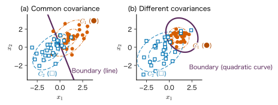
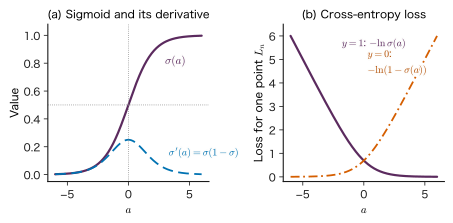
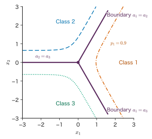
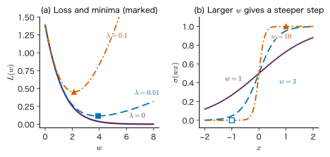
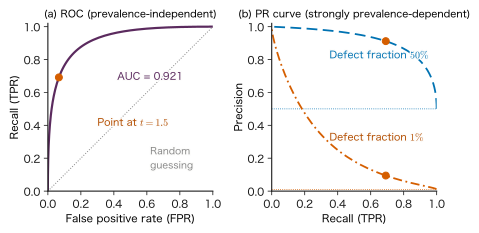
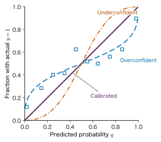

Chapter 9Linear Classification Models — Decision Boundaries and Probabilities
- Suppose a sample is described by two descriptors (for example, firing temperature and dopant amount), and it either becomes the target phase or does not. How should we draw the line between the two cases from data?
- A classification model answers, “The probability that this sample becomes the target phase is 0.93.” Where does this probability come from, and how far can we trust it?
- We build a classifier with “99% accuracy” for a process in which only 1% of the products are defective. Is this a good classifier?
Suppose we describe the sintering conditions by two descriptors and plot on a plane a ● for each fired sample that became single-phase and a ■ for each one in which a secondary phase appeared. The ● and ■ points then gather mostly on different sides, but they mix near the boundary. Drawing a single line along this boundary and predicting “single-phase if on this side of the line” is the linear classification of this chapter. However, the certainty of the prediction must differ between a sample right next to the boundary and one far away from it. So we apply a function that converts the distance from the line into a probability (the sigmoid) and build a model that outputs the “probability of becoming single-phase.” This is logistic regression.
In this chapter we first establish the geometry of the discriminant function and the decision boundary (a hyperplane) (Section 9.1). We then compare a generative method, which builds probabilities by Bayes's theorem from the distribution of the data in each class (Section 9.2), with a discriminative method, which models the probability directly (Sections 9.3–9.4). The loss of the latter is the cross-entropy of Chapter 5, and we derive, line by line, that its gradient takes the simple form “prediction − target.” We extend the model to three or more classes with the softmax (Section 9.5). In the second half we treat the fact that when the data are cleanly separated by a line, the maximum likelihood weights escape to infinity (Section 9.6), the evaluation of classifiers (the confusion matrix, precision and recall, the ROC curve and the PR curve) together with imbalanced data (Section 9.7), and the calibration of output probabilities (Section 9.8), and we connect these to the tolerance factor of perovskites and the pass/fail judgment of products (Section 9.9).
- Show that the decision boundary of a linear discriminant function $f(\bm{x})=\bm{w}^{\tp}\bm{x}+b$ is a hyperplane with normal vector $\bm{w}$, and derive the signed distance $f(\bm{x})/\norm{\bm{w}}$ from a point to the boundary.
- Derive that, if the Gaussian distributions of the classes share a common covariance, the posterior probability takes the form $\sigma(\bm{w}^{\tp}\bm{x}+b)$.
- Show the properties of the sigmoid; derive the cross-entropy loss from the Bernoulli likelihood, together with its gradient $\sum_n(\hat{y}_n-y_n)\bm{\phi}_n$ and its Hessian matrix; and explain convexity.
- Advance gradient descent for logistic regression by one or two steps by hand on a small data set.
- Derive that the gradient of the softmax and multiclass cross-entropy is $\hat{\bm{y}}-\bm{y}$, and compute it stably with log-sum-exp.
- Explain why the maximum likelihood solution diverges for linearly separable data, and why regularization stops this.
- Compute accuracy, precision, recall, and F1 from a confusion matrix; explain why accuracy is unreliable for imbalanced data; and explain how to choose a threshold according to the cost of errors.
Sections for the introductory route: 9.1, 9.3, 9.4, 9.5, 9.11. Sections marked “Detailed Route” may be skipped on a first reading.
9.1 Discriminant Functions and Decision Boundaries — Separating with a Line
9.1.1 What we want to do
Classification is the task of predicting a class from an input $\bm{x}$ (Chapter 1, Section 1.2). In this chapter we first consider the case of two classes. We let the class label be $y\in\{0,1\}$ and read $y=1$ as “the target phase is obtained (single phase)” and $y=0$ as “it is not obtained (a different phase appears).” The input is the column vector $\bm{x}=(x_1,\dots,x_D)^{\tp}\in\R^{D}$ listing $D$ descriptors.
The simplest classification rule is to decide by the sign of a linear expression in the input.
Definition 9.1: Linear discriminant function and decision boundary
Using a weight $\bm{w}\in\R^{D}$ (a column vector) and a bias $b\in\R$, the function
\begin{equation} f(\bm{x})=\bm{w}^{\tp}\bm{x}+b \label{eq:9-disc} \end{equation}(where $\bm{w}^{\tp}\bm{x}=\sum_{i=1}^{D}w_ix_i$) is called a linear discriminant function. We predict class 1 if $f(\bm{x})\ge0$ and class 0 if $f(\bm{x})\lt0$. The set of points in the input space where $f(\bm{x})=0$,
$$ \mathcal{B}=\{\bm{x}\in\R^{D}\mid \bm{w}^{\tp}\bm{x}+b=0\} $$is called the decision boundary. The value of $f$ does not necessarily have the same unit as the descriptors (the weights absorb the units). Below, we take the descriptors to be standardized, dimensionless values (Chapter 7, Section 7.3).
If $D=2$, the decision boundary is the line $w_1x_1+w_2x_2+b=0$ in the plane; if $D=3$, it is a plane in space. For general $D$ it is a flat set of dimension $D-1$, which we call a hyperplane.
9.1.2 The weight is the normal to the boundary, and the discriminant function is the signed distance
The value of the discriminant function has a geometric meaning (Figure 9.1).
Derivation: $\bm{w}$ is orthogonal to the boundary, and the signed distance is $f(\bm{x})/\norm{\bm{w}}$
(1) $\bm{w}$ is the normal to the boundary. Take two points $\bm{x}_A,\bm{x}_B$ on the boundary. Then $\bm{w}^{\tp}\bm{x}_A+b=0$ and $\bm{w}^{\tp}\bm{x}_B+b=0$ hold. Subtracting gives
$$ \bm{w}^{\tp}(\bm{x}_A-\bm{x}_B)=0 . $$Since $\bm{x}_A-\bm{x}_B$ is an arbitrary direction along the boundary, $\bm{w}$ is orthogonal to every direction along the boundary.
(2) The signed distance. Decompose an arbitrary point $\bm{x}$ into a point $\bm{x}_{\perp}$ on the boundary (the foot of the perpendicular dropped from $\bm{x}$) and a component in the normal direction. The unit vector in the normal direction is $\bm{w}/\norm{\bm{w}}$, so for some real number $r$ we can write
$$ \bm{x}=\bm{x}_{\perp}+r\,\frac{\bm{w}}{\norm{\bm{w}}} $$Here $r$ is the “signed distance”: positive if $\bm{x}$ lies on the side toward which $\bm{w}$ points, and negative if it lies on the opposite side. Multiply both sides by $\bm{w}^{\tp}$ and add $b$.
$$ \begin{aligned} f(\bm{x})&=\bm{w}^{\tp}\bm{x}_{\perp}+b+r\,\frac{\bm{w}^{\tp}\bm{w}}{\norm{\bm{w}}}\\ &=0+r\,\frac{\norm{\bm{w}}^{2}}{\norm{\bm{w}}}=r\norm{\bm{w}} . \end{aligned} $$In going from the first line to the second, we used that $\bm{x}_{\perp}$ lies on the boundary ($\bm{w}^{\tp}\bm{x}_{\perp}+b=0$) and that $\bm{w}^{\tp}\bm{w}=\norm{\bm{w}}^{2}$. Therefore
\begin{equation} r=\frac{f(\bm{x})}{\norm{\bm{w}}} \label{eq:9-dist} \end{equation}holds. In particular, at the origin $\bm{x}=\bm{0}$ we have $f(\bm{0})=b$, so the signed distance of the origin is $b/\norm{\bm{w}}$, and $b$ is the amount by which the boundary is shifted away from the origin.
∎
From Eq. \eqref{eq:9-dist} we see the following two facts.
- Multiplying $\bm{w}$ and $b$ by the same positive number $c$ does not change the boundary. The equations $cf(\bm{x})=0$ and $f(\bm{x})=0$ define the same set, and the signed distance $cf/\norm{c\bm{w}}=f/\norm{\bm{w}}$ does not change either. Only the “scale” of the values of $f$ changes. This freedom is the cause of the divergence discussed in Section 9.6.
- The larger $\abs{f(\bm{x})}$ is, the farther the point is from the boundary. It seems reasonable to be more confident in the classification of points far from the boundary. In Section 9.3, we convert this $f$ into a probability.
Example 9.1: Boundary and signed distance
For two descriptors $(x_1,x_2)$, consider the discriminant function with $\bm{w}=(2,1)^{\tp}$ and $b=-2$. (1) Write the equation of the decision boundary. (2) Which class is predicted for the point $(2,1)$ and for the origin $(0,0)$? Find the signed distance of each. (3) How do the answers to (2) change if $\bm{w}$ and $b$ are multiplied by 10?
Solution. (1) $2x_1+x_2-2=0$, that is, the line $x_2=-2x_1+2$.
(2) $\norm{\bm{w}}=\sqrt{2^{2}+1^{2}}=\sqrt5\approx2.236$. At the point $(2,1)$, $f=2\times2+1\times1-2=3\gt0$, so it is class 1, and the signed distance is $3/\sqrt5\approx1.342$. At the origin, $f=b=-2\lt0$, so it is class 0, and the signed distance is $-2/\sqrt5\approx-0.894$.
(3) The values of $f$ change to $30$ and $-20$, but $\norm{\bm{w}}$ also becomes $10\sqrt5$, so the signed distances remain $1.342$ and $-0.894$, and the predicted classes do not change either.
9.1.3 With basis functions, the boundary can curve
As in the regression of Chapter 8, instead of using the input $\bm{x}$ as it is, we may first transform it with basis functions $\bm{\phi}(\bm{x})=(\phi_1(\bm{x}),\dots,\phi_M(\bm{x}))^{\tp}\in\R^{M}$ and then form a linear expression.
$$ f(\bm{x})=\bm{w}^{\tp}\bm{\phi}(\bm{x})+b,\qquad \bm{w}\in\R^{M}. $$For example, if we take $\bm{\phi}(\bm{x})=(x_1,x_2,x_1^{2},x_1x_2,x_2^{2})^{\tp}$, the boundary $f=0$ becomes an ellipse or a hyperbola in the plane of $\bm{x}$. Even so, the expression is linear in $\bm{w}$, so the computation of learning can still be treated as “linear.” All equations in this chapter are written with $\bm{\phi}_n\equiv\bm{\phi}(\bm{x}_n)$; setting $\bm{\phi}(\bm{x})=\bm{x}$ gives the case where the input itself is used. Choosing which basis to use is a choice of assumption, and the methods that choose the basis automatically are kernel methods (Chapter 10) and neural networks (Chapter 14).
The sign of the discriminant function alone does not tell us “how certain” the prediction is. A point right next to the boundary and a point far from it would both be answered with the same “class 1.” There are two ways to obtain probabilities. One is the generative approach (Section 9.2), which builds a distribution of the data for each class and computes probabilities with Bayes's theorem. The other is the discriminative approach (Section 9.3), which models the probability itself directly as a function of the input. On the introductory route, you may skip Section 9.2 and go on to Section 9.3.
9.2 Generative Classification — From Class-Conditional Distributions to the Posterior ProbabilityDetailed Route
9.2.1 Building the posterior probability with Bayes's theorem
We write the two classes as $C_1$ ($y=1$) and $C_2$ ($y=0$). Suppose we know the distribution of the input for each class, $p(\bm{x}\mid C_k)$ (the class-conditional density), and the proportion of each class, $p(C_k)$ (the prior probability). Then the probability of each class after observing an input $\bm{x}$ can be computed with Bayes's theorem (Chapter 2, Section 2.4). Because this method models the entire process by which the data are generated, it is called generative classification.
$$ p(C_1\mid\bm{x})=\frac{p(\bm{x}\mid C_1)p(C_1)}{p(\bm{x}\mid C_1)p(C_1)+p(\bm{x}\mid C_2)p(C_2)} . $$Dividing the numerator and the denominator by the numerator, and letting
\begin{equation} a(\bm{x})\equiv\ln\frac{p(\bm{x}\mid C_1)\,p(C_1)}{p(\bm{x}\mid C_2)\,p(C_2)} \label{eq:9-gen-a} \end{equation}we have (the second term of the denominator) / (the numerator) $=e^{-a}$, so
\begin{equation} p(C_1\mid\bm{x})=\frac{1}{1+e^{-a}}=\sigma(a) \label{eq:9-gen-sig} \end{equation}Here $\sigma(a)=1/(1+e^{-a})$ is the sigmoid function (the logistic function). (In this chapter we always write $\sigma(\cdot)$ with an argument, to distinguish it from the $\sigma$ of the standard deviation.) The quantity $a$ equals the logarithm of the ratio of the posterior probabilities of the two classes, $\ln\{p(C_1\mid\bm{x})/p(C_2\mid\bm{x})\}$, and is called the log-odds or the logit. So far we have assumed nothing about the form of the distributions.
9.2.2 With Gaussian distributions sharing a covariance, the boundary is a straight line
Assume that the input of each class follows a multivariate Gaussian distribution (Chapter 3, Section 3.6) whose mean differs between classes but whose covariance matrix is common.
$$ \begin{aligned} p(\bm{x}\mid C_k)&=\Normal(\bm{x}\mid\bm{\mu}_k,\bm{\Sigma})\\ &=\frac{1}{(2\pi)^{D/2}\abs{\bm{\Sigma}}^{1/2}}\exp\!\left(-\tfrac12Q_k\right),\\ Q_k&=(\bm{x}-\bm{\mu}_k)^{\tp}\bm{\Sigma}^{-1}(\bm{x}-\bm{\mu}_k). \end{aligned} $$Here $\bm{\mu}_k\in\R^{D}$ is the mean of class $k$, $\bm{\Sigma}\in\R^{D\times D}$ is the common covariance matrix (symmetric and positive definite), and $\pi_k\equiv p(C_k)$ is the prior probability ($\pi_1+\pi_2=1$; in this section $\pi_k$ is not the circle constant).
Derivation: the log-odds is a linear function of $\bm{x}$
Substitute into Eq. \eqref{eq:9-gen-a}. The normalization coefficient $(2\pi)^{-D/2}\abs{\bm{\Sigma}}^{-1/2}$ is the same for the two classes, so it cancels when we take the ratio.
$$ a=-\tfrac12Q_1+\tfrac12Q_2+\ln\frac{\pi_1}{\pi_2}. $$Expand the quadratic form $Q_k$. Since $\bm{\Sigma}^{-1}$ is symmetric, $\bm{x}^{\tp}\bm{\Sigma}^{-1}\bm{\mu}_k=\bm{\mu}_k^{\tp}\bm{\Sigma}^{-1}\bm{x}$, and therefore
$$ \begin{aligned} Q_k&=\bm{x}^{\tp}\bm{\Sigma}^{-1}\bm{x}-2\bm{\mu}_k^{\tp}\bm{\Sigma}^{-1}\bm{x}\\ &\quad+\bm{\mu}_k^{\tp}\bm{\Sigma}^{-1}\bm{\mu}_k . \end{aligned} $$Substituting this for $k=1,2$, the quadratic term $\bm{x}^{\tp}\bm{\Sigma}^{-1}\bm{x}$ appears with coefficients $-\tfrac12$ and $+\tfrac12$ and cancels. What remains is
$$ \begin{aligned} a&=\bm{\mu}_1^{\tp}\bm{\Sigma}^{-1}\bm{x}-\bm{\mu}_2^{\tp}\bm{\Sigma}^{-1}\bm{x}\\ &\quad-\tfrac12\bm{\mu}_1^{\tp}\bm{\Sigma}^{-1}\bm{\mu}_1+\tfrac12\bm{\mu}_2^{\tp}\bm{\Sigma}^{-1}\bm{\mu}_2+\ln\frac{\pi_1}{\pi_2} \end{aligned} $$Combining the first row into $\bigl\{\bm{\Sigma}^{-1}(\bm{\mu}_1-\bm{\mu}_2)\bigr\}^{\tp}\bm{x}$, we obtain the form $a=\bm{w}^{\tp}\bm{x}+b$.
∎
Theorem 9.1: Posterior probability for Gaussian distributions with a common covariance
If the class-conditional densities of the two classes are $\Normal(\bm{x}\mid\bm{\mu}_k,\bm{\Sigma})$ ($\bm{\Sigma}$ common) and the prior probabilities are $\pi_1,\pi_2$, then $p(C_1\mid\bm{x})=\sigma(\bm{w}^{\tp}\bm{x}+b)$, where
The decision boundary $p(C_1\mid\bm{x})=0.5$ is $a=0$, that is, a hyperplane.
The vector $\bm{w}$ is not the difference of the means $\bm{\mu}_1-\bm{\mu}_2$ itself but that difference multiplied by $\bm{\Sigma}^{-1}$. Directions with large spread are discounted, and directions with small spread are emphasized. The prior probability enters only $b$, and making $\pi_1$ smaller translates the boundary toward the side of class 1.
If the covariance differs from class to class ($\bm{\Sigma}_1\ne\bm{\Sigma}_2$), the quadratic terms in the derivation above do not cancel, and $a$ retains the term $-\tfrac12\bm{x}^{\tp}(\bm{\Sigma}_1^{-1}-\bm{\Sigma}_2^{-1})\bm{x}$ and the term $-\tfrac12\ln(\abs{\bm{\Sigma}_1}/\abs{\bm{\Sigma}_2})$ coming from the ratio of the normalization coefficients. The boundary becomes a quadratic curve (a quadric surface) (Figure 9.2(b)).

9.2.3 Maximum likelihood estimation of the parameters
In practice we estimate $\bm{\mu}_k$, $\bm{\Sigma}$, and $\pi_k$ from data. Suppose there are $N_1$ data points of class $C_1$ and $N_2$ of class $C_2$ ($N_1+N_2=N$). Maximizing the log-likelihood of the joint distribution $p(\bm{x},C_k)=\pi_k\Normal(\bm{x}\mid\bm{\mu}_k,\bm{\Sigma})$ (by the same procedure as the maximum likelihood estimation of a Gaussian distribution in Chapter 4, Section 4.2), we obtain
$$ \begin{gathered} \hat{\pi}_1=\frac{N_1}{N},\qquad \hat{\bm{\mu}}_k=\frac{1}{N_k}\sum_{n\in C_k}\bm{x}_n,\\ \hat{\bm{\Sigma}}=\frac{N_1}{N}\bm{S}_1+\frac{N_2}{N}\bm{S}_2 \end{gathered} $$Here $\bm{S}_k=\frac{1}{N_k}\sum_{n\in C_k}(\bm{x}_n-\hat{\bm{\mu}}_k)(\bm{x}_n-\hat{\bm{\mu}}_k)^{\tp}$ is the sample covariance matrix of each class, and the common covariance is the average of the two weighted by the proportions of data points. The computation needs only the mean and covariance of each class, and no iteration is required. This method is called linear discriminant analysis (LDA).
Example 9.2: One-dimensional generative classification
Suppose a descriptor $x$ (a standardized value) follows $\Normal(x\mid2,1)$ in class 1 and $\Normal(x\mid0,1)$ in class 0. (1) For $\pi_1=\pi_2=0.5$, find $w$, $b$, and the location of the boundary. Find $p(C_1\mid x)$ at $x=1.5$. (2) What happens when class 1 makes up 20% of the whole ($\pi_1=0.2$)?
Solution. In one dimension, $\bm{\Sigma}^{-1}=1/\sigma^{2}=1$. (1) By Eq. \eqref{eq:9-gen-w}, $w=(2-0)/1=2$. By Eq. \eqref{eq:9-gen-b}, $b=-\tfrac12\times2^{2}+\tfrac12\times0^{2}+\ln1=-2$. The boundary is $2x-2=0$, that is, $x=1$ (exactly the midpoint of the two means). At $x=1.5$, $a=2\times1.5-2=1$ and $p(C_1\mid x)=\sigma(1)=1/(1+e^{-1})\approx0.731$.
(2) $b=-2+\ln(0.2/0.8)$ $=-2-1.386=-3.386$. The boundary moves to $x=3.386/2\approx1.693$, and at $x=1.5$ we have $a=3-3.386=-0.386$ and $p(C_1\mid x)=\sigma(-0.386)\approx0.405$. Even for the same measured value, if class 1 is rare, the “probability of being class 1” goes down (for the same reason as in the defect-inspection example of Chapter 2, Section 2.4).
Generative versus discriminative: counting the parameters
Generative classification models the entire distribution of the input through $p(\bm{x}\mid C_k)$. In $D$ dimensions with a common covariance, we need $2D$ parameters for the means, $D(D+1)/2$ for the covariance, and one for the prior probability (76 parameters for $D=10$). Yet what is finally used for classification is only the $D+1$ parameters of $\bm{w}$ and $b$ (11 for $D=10$). A discriminative method (Section 9.3) determines these $D+1$ parameters directly. If the Gaussian assumption is correct, the parameters of the generative method can be estimated efficiently from little data, but if the assumption is wrong (for example, with heavy-tailed distributions or outliers), that error is carried into $\bm{w}$. Conversely, a generative model also gives the distribution of the input $p(\bm{x})$, so it can also be used to detect “inputs far from the training data.”
9.3 Discriminative Classification — Logistic Regression
9.3.1 The model: expressing the log-odds as a linear function
In discriminative classification, we do not touch the distribution of the input; instead we model directly the probability of the class given the input, $p(y=1\mid\bm{x})$. Since a probability lies between 0 and 1, we cannot use the linear function $\bm{w}^{\tp}\bm{\phi}(\bm{x})+b$ (whose values range from $-\infty$ to $\infty$) as a probability as it stands. We therefore convert the probability $p$ into the log-odds $\ln\{p/(1-p)\}$ (which takes values from $-\infty$ to $\infty$) and express that by a linear function.
$$ \ln\frac{p(y=1\mid\bm{x})}{1-p(y=1\mid\bm{x})}=\bm{w}^{\tp}\bm{\phi}(\bm{x})+b\equiv a(\bm{x}). $$Solving this for $p$: from $p/(1-p)=e^{a}$ we get $p=e^{a}(1-p)$, then $p(1+e^{a})=e^{a}$, and so $p=e^{a}/(1+e^{a})=1/(1+e^{-a})$.
Definition 9.2: Logistic regression
For an input $\bm{x}$, basis functions $\bm{\phi}(\bm{x})\in\R^{M}$, weights $\bm{w}\in\R^{M}$, and a bias $b\in\R$, the model
\begin{equation} \begin{aligned} \hat{y}(\bm{x})&=p(y=1\mid\bm{x};\bm{w},b)\\ &=\sigma(a),\\ a&=\bm{w}^{\tp}\bm{\phi}(\bm{x})+b \end{aligned} \label{eq:9-logistic} \end{equation}(where $\sigma(a)=1/(1+e^{-a})$) is called logistic regression. We have $p(y=0\mid\bm{x})=1-\hat{y}$. The basic rule is to predict class 1 when $\hat{y}\ge0.5$ (that is, $a\ge0$), but the threshold is changed according to the purpose (Sections 9.7 and 9.9).
The word “regression” appears in the name because we fit a probability (a continuous value) as a function of the input, but the task it performs is classification. The decision boundary $\hat{y}=0.5$ corresponds to $a=0$, so it is a hyperplane of the same form as the boundary of the linear discriminant function in Section 9.1. The difference is that the probability approaches 0 or 1 smoothly as we move away from the boundary. By Eq. \eqref{eq:9-dist}, $a=\norm{\bm{w}}\times(\text{signed distance})$, so the larger $\norm{\bm{w}}$ is, the more abruptly the probability changes near the boundary.
This form may look as if it came out of nowhere, but as we showed in Section 9.2, when the inputs of each class follow Gaussian distributions with a common covariance, the posterior probability takes exactly this form (Theorem 9.1). It is not limited to Gaussian distributions: the same form also appears when the conditional densities of the classes belong to the same exponential family (Chapter 3, Section 3.11) and satisfy certain conditions. Logistic regression is a model that does not assume such details of the distributions, and assumes only that “the log-odds is a linear function of the features.”
9.3.2 Properties of the sigmoid function
Theorem 9.2: Symmetry and derivative of the sigmoid
For $\sigma(a)=1/(1+e^{-a})$, the following hold.
\begin{equation} \sigma(-a)=1-\sigma(a) \label{eq:9-sig-sym} \end{equation} \begin{equation} \sigma'(a)=\sigma(a)\bigl(1-\sigma(a)\bigr) \label{eq:9-sig-deriv} \end{equation}Moreover, $0\lt\sigma(a)\lt1$, $\sigma(0)=1/2$, and $\sigma$ is monotonically increasing; its inverse function is $a=\ln\{\sigma/(1-\sigma)\}$, which is called the logit.
Proof
(1) Symmetry: $\sigma(-a)=\dfrac{1}{1+e^{a}}$. Multiplying the numerator and denominator by $e^{-a}$ gives $\dfrac{e^{-a}}{e^{-a}+1}$. On the other hand, $1-\sigma(a)=\dfrac{(1+e^{-a})-1}{1+e^{-a}}=\dfrac{e^{-a}}{1+e^{-a}}$. The two are equal.
(2) Derivative: we differentiate $\sigma(a)=(1+e^{-a})^{-1}$ as a composite function.
$$ \begin{aligned} \sigma'(a)&=-(1+e^{-a})^{-2}\times(-e^{-a})\\ &=\frac{e^{-a}}{(1+e^{-a})^{2}}=\frac{1}{1+e^{-a}}\times\frac{e^{-a}}{1+e^{-a}}\\ &=\sigma(a)\bigl(1-\sigma(a)\bigr). \end{aligned} $$In the last equality we used $e^{-a}/(1+e^{-a})=1-\sigma(a)$, obtained in (1). Since $\sigma'(a)\gt0$, the function is monotonically increasing.
∎
From Eq. \eqref{eq:9-sig-deriv}, $\sigma'$ attains its maximum value $1/4$ at $a=0$ and approaches 0 as $\abs{a}$ grows (Figure 9.3(a)). This fact that it is “at most $1/4$” is used for the rule of thumb for the learning rate (Section 9.3.5).

9.3.3 From the Bernoulli likelihood to the cross-entropy loss
Suppose that training data $\data=\{(\bm{x}_n,y_n)\}_{n=1}^{N}$ with $y_n\in\{0,1\}$ are given. We write $\bm{\phi}_n\equiv\bm{\phi}(\bm{x}_n)\in\R^{M}$, $a_n\equiv\bm{w}^{\tp}\bm{\phi}_n+b$, and $\hat{y}_n\equiv\sigma(a_n)$. We model the label $y_n$ given the input $\bm{x}_n$ as following a Bernoulli distribution (Chapter 3, Section 3.2) with success probability $\hat{y}_n$.
$$ p(y_n\mid\bm{x}_n;\bm{w},b)=\hat{y}_n^{\,y_n}(1-\hat{y}_n)^{1-y_n}. $$If $y_n=1$ the right-hand side equals $\hat{y}_n$, and if $y_n=0$ it equals $1-\hat{y}_n$. If the labels of the data points are independent given the inputs, the likelihood is the product
$$ p(\bm{y}\mid\bm{X};\bm{w},b)=\prod_{n=1}^{N}\hat{y}_n^{\,y_n}(1-\hat{y}_n)^{1-y_n} $$(where $\bm{y}=(y_1,\dots,y_N)^{\tp}$ and $\bm{X}$ collects the inputs). Maximum likelihood estimation (Chapter 4, Section 4.2) is the same as minimizing the logarithm of this with its sign reversed.
Definition 9.3: Cross-entropy loss (two classes)
\begin{equation} L(\bm{w},b)=\sum_{n=1}^{N}L_n \label{eq:9-ce} \end{equation} $$ \begin{aligned} L_n&=-y_n\ln\hat{y}_n\\ &\quad-(1-y_n)\ln(1-\hat{y}_n) \end{aligned} $$$L_n$ is the loss for a single point. This is the same as the cross-entropy loss of Chapter 5, Section 5.5.
Notation: Writing the loss as a sum
In this chapter and Chapter 8, we write the loss as a sum over the data. In Chapter 7 we used the mean ($\frac1N\sum_n$), and the neural networks of Chapters 14 and 15 also use the mean. The sum and the mean differ only by the constant factor $N$, so the minimizer does not change; but the gradients differ by a factor of $N$, so even with the same learning rate $\eta$ the size of one step changes. The meaning of the value of the regularization coefficient $\lambda$ also shifts by a factor of $N$.
The shape of the loss is as in Figure 9.3(b). When the correct answer is $y_n=1$, we have $L_n\to0$ if $\hat{y}_n\to1$ ($a_n\to\infty$), and $L_n\to\infty$ if $\hat{y}_n\to0$. We saw in Chapter 5 that this strongly penalizes predictions that are “confidently wrong.” It is clearer to rewrite the loss as a function of $a$. Using Theorem 9.2, $\ln\hat{y}=-\ln(1+e^{-a})$ and $\ln(1-\hat{y})=\ln\sigma(-a)=-\ln(1+e^{a})$, so
\begin{equation} \begin{aligned} L_n&=y_n\ln(1+e^{-a_n})\\ &\quad+(1-y_n)\ln(1+e^{a_n})\\ &=\ln(1+e^{a_n})-y_na_n \end{aligned} \label{eq:9-ce-a} \end{equation}(in the last equality we used $\ln(1+e^{-a})=\ln(1+e^{a})-a$). The function $\ln(1+e^{a})$ approaches 0 as $a\to-\infty$ and approaches $a$ as $a\to\infty$. In numerical computation we compute in this form without going through $\hat{y}$, and for $a\gt0$ we rewrite $\ln(1+e^{a})=a+\ln(1+e^{-a})$ to avoid overflow of $e^{a}$.
Example 9.3: The loss of a single point and the sign of its gradient
For a certain sample, $a=2$. (1) Find $\hat{y}$. (2) Find the loss $L_n$ when the correct answer is $y=1$ and when it is $y=0$. (3) Find $\partial L_n/\partial a$ in each case, and state in which direction $a$ moves under gradient descent (you may use the result $\partial L_n/\partial a_n=\hat{y}_n-y_n$ of Section 9.3.4).
Solution. (1) $\hat{y}=\sigma(2)=1/(1+e^{-2})$ $=1/1.1353\approx0.881$.
(2) For $y=1$: $L_n=-\ln0.881$ $=\ln(1+e^{-2})\approx0.127$. For $y=0$: $L_n=-\ln(1-0.881)$ $=\ln(1+e^{2})\approx2.127$. This agrees with Eq. \eqref{eq:9-ce-a}, which gives $\ln(1+e^{2})-1\times2=2.127-2=0.127$.
(3) For $y=1$, $\hat{y}-y=0.881-1=-0.119$. Since the gradient is negative, $a$ moves only slightly in the direction of increasing (that is, in the direction of strengthening the confidence). For $y=0$, the value is $0.881-0=0.881$, and $a$ moves substantially in the direction of decreasing. It is pulled back with a force proportional to the size of the error.
9.3.4 Derivation of the gradient
To find the $(\bm{w},b)$ that minimizes the loss, we compute the gradient. We apply the chain rule (University Mathematics, Section 6.4) in the order $L_n\to a_n\to(\bm{w},b)$.
Derivation: $\partial L/\partial\bm{w}=\sum_n(\hat{y}_n-y_n)\bm{\phi}_n$
(1) Differentiation with respect to $a_n$. We differentiate $L_n=\ln(1+e^{a_n})-y_na_n$ of Eq. \eqref{eq:9-ce-a} with respect to $a_n$.
$$ \pdiff{L_n}{a_n}=\frac{e^{a_n}}{1+e^{a_n}}-y_n . $$Dividing the numerator and denominator of the first term by $e^{a_n}$ gives $1/(e^{-a_n}+1)=\sigma(a_n)=\hat{y}_n$. Therefore
\begin{equation} \pdiff{L_n}{a_n}=\hat{y}_n-y_n \label{eq:9-dLda} \end{equation}(Starting instead from the defining form $-\{y\ln\sigma+(1-y)\ln(1-\sigma)\}$ and using Theorem 9.2, we get the same result, $-y(1-\sigma)+(1-y)\sigma=\sigma-y$.)
(2) Differentiation with respect to $\bm{w}$ and $b$. Since $a_n=\sum_{j=1}^{M}w_j\phi_j(\bm{x}_n)+b$, we have $\partial a_n/\partial w_j=\phi_j(\bm{x}_n)$ and $\partial a_n/\partial b=1$. By the chain rule,
$$ \begin{aligned} \pdiff{L_n}{w_j}&=\pdiff{L_n}{a_n}\pdiff{a_n}{w_j}=(\hat{y}_n-y_n)\,\phi_j(\bm{x}_n),\\ \pdiff{L_n}{b}&=\hat{y}_n-y_n . \end{aligned} $$(3) Summing and collecting into a vector. Since $L=\sum_nL_n$, it suffices to sum over $n$ for each component and arrange the components $j=1,\dots,M$ in a column.
∎
Summarizing the above,
\begin{equation} \begin{aligned} \nabla_{\bm{w}}L&=\sum_{n=1}^{N}(\hat{y}_n-y_n)\,\bm{\phi}_n,\\ \pdiff{L}{b}&=\sum_{n=1}^{N}(\hat{y}_n-y_n) \end{aligned} \label{eq:9-grad} \end{equation}With the design matrix $\bm{\Phi}\in\R^{N\times M}$ (whose $n$th row is $\bm{\phi}_n^{\tp}$) and $\hat{\bm{y}}=(\hat{y}_1,\dots,\hat{y}_N)^{\tp}$, we can write $\nabla_{\bm{w}}L=\bm{\Phi}^{\tp}(\hat{\bm{y}}-\bm{y})$.
This form is exactly the same as the gradient of least squares in Chapter 8, $-\bm{\Phi}^{\tp}(\bm{y}-\bm{\Phi}\bm{w})=\bm{\Phi}^{\tp}(\hat{\bm{y}}-\bm{y})$ (in regression, $\hat{\bm{y}}=\bm{\Phi}\bm{w}$). We add up the “prediction minus correct answer” of each data point, weighted by the feature vector of that data point. This simple form arises because the derivative of the sigmoid, $\hat{y}(1-\hat{y})$, exactly cancels the derivatives $1/\hat{y}$ and $1/(1-\hat{y})$ of the logarithms in the cross-entropy. If we combine the squared error $\tfrac12(\hat{y}-y)^{2}$ with the sigmoid, the gradient becomes $(\hat{y}-y)\hat{y}(1-\hat{y})\bm{\phi}$, and at a point where $\hat{y}$ is stuck at 0 or 1 (a confidently wrong point), $\hat{y}(1-\hat{y})\approx0$, so the gradient almost vanishes. This is another reason for using the cross-entropy for classification (the point foreshadowed in Chapter 5, Section 5.5).
The equation obtained by setting the gradient to 0, $\sum_n(\sigma(a_n)-y_n)\bm{\phi}_n=\bm{0}$, is nonlinear in $\bm{w}$, and unlike the normal equations of least squares it cannot be solved in closed form. We therefore solve it numerically, by gradient descent (Chapter 7, Section 7.2)
\begin{equation} \begin{aligned} \bm{w}&\leftarrow\bm{w}-\eta\nabla_{\bm{w}}L,\\ b&\leftarrow b-\eta\pdiff{L}{b} \end{aligned} \label{eq:9-gd} \end{equation}or by Newton's method (Chapter 7, Section 7.9). Incidentally, $\partial L/\partial b=0$ shows that at the minimum, $\sum_n\hat{y}_n=\sum_ny_n$; that is, the sum of the predicted probabilities equals the number of $y=1$ points in the training data.
9.3.5 The Hessian matrix and convexity
It is convexity that guarantees that the point reached by gradient descent is a global minimum (Chapter 7, Section 7.4). Let us include the bias in the features and use $\tilde{\bm{\phi}}_n=(\bm{\phi}_n^{\tp},1)^{\tp}\in\R^{M+1}$ and $\tilde{\bm{w}}=(\bm{w}^{\tp},b)^{\tp}$. Then $a_n=\tilde{\bm{w}}^{\tp}\tilde{\bm{\phi}}_n$, and the gradient is $\sum_n(\hat{y}_n-y_n)\tilde{\bm{\phi}}_n$. We differentiate this once more with respect to $\tilde{\bm{w}}$. Here $y_n$ is a constant, and by Eq. \eqref{eq:9-sig-deriv} and the chain rule the derivative of $\hat{y}_n=\sigma(a_n)$ is $\partial\hat{y}_n/\partial\tilde{\bm{w}}=\hat{y}_n(1-\hat{y}_n)\tilde{\bm{\phi}}_n$, so
\begin{equation} \begin{aligned} \bm{H}&=\frac{\partial^{2}L}{\partial\tilde{\bm{w}}\,\partial\tilde{\bm{w}}^{\tp}}\\ &=\sum_{n=1}^{N}\hat{y}_n(1-\hat{y}_n)\,\tilde{\bm{\phi}}_n\tilde{\bm{\phi}}_n^{\tp} \end{aligned} \label{eq:9-hess} \end{equation}(where $\bm{H}\in\R^{(M+1)\times(M+1)}$). For any vector $\bm{v}\in\R^{M+1}$,
$$ \bm{v}^{\tp}\bm{H}\bm{v}=\sum_{n=1}^{N}\hat{y}_n(1-\hat{y}_n)\,(\bm{v}^{\tp}\tilde{\bm{\phi}}_n)^{2}\ge0 $$because the coefficient of each term is positive by $0\lt\hat{y}_n\lt1$, and $(\bm{v}^{\tp}\tilde{\bm{\phi}}_n)^{2}\ge0$. Since the Hessian matrix is positive semidefinite everywhere, the cross-entropy loss is convex in $(\bm{w},b)$, and every local minimum is a global minimum. Unlike a neural network (Chapter 14), the iteration never falls into a different solution depending on the initial value.
The coefficient $\hat{y}_n(1-\hat{y}_n)$ is at most 1/4, so $\bm{H}\preceq\tfrac14\sum_n\tilde{\bm{\phi}}_n\tilde{\bm{\phi}}_n^{\tp}$ (the matrix obtained by subtracting the left-hand side from the right-hand side is positive semidefinite). From the discussion in Chapter 7, Section 7.2, if we take the learning rate to satisfy
$$ \eta\lt\frac{2}{L_{\mathrm c}},\qquad L_{\mathrm c}=\tfrac14\lambda_{\max}\Bigl(\sum_n\tilde{\bm{\phi}}_n\tilde{\bm{\phi}}_n^{\tp}\Bigr) $$then the loss decreases at every step ($\lambda_{\max}$ is the largest eigenvalue; when the regularization term $\tfrac{\lambda}{2}\norm{\bm{w}}^{2}$ is added, add $\lambda$ to $L_{\mathrm c}$). This is a sufficient condition, and convergence can occur even when the rule of thumb is exceeded slightly. Since we write the loss as a sum, $L_{\mathrm c}$ grows roughly in proportion to the number of data points $N$, and the stable $\eta$ becomes smaller, on the order of $1/N$.
In Newton's method we update by $\tilde{\bm{w}}\leftarrow\tilde{\bm{w}}-\bm{H}^{-1}\nabla L$ (in practice we solve the simultaneous equations $\bm{H}\bm{d}=\nabla L$ by Cholesky decomposition). Since $\bm{H}$ is the matrix of a weighted least squares problem with weights $\hat{y}_n(1-\hat{y}_n)$, this algorithm is also called iteratively reweighted least squares (IRLS).
9.3.6 Regularization
As in regression, we often add a penalty on the square of the weights and minimize
\begin{equation} L_{\lambda}(\bm{w},b)=L(\bm{w},b)+\tfrac{\lambda}{2}\norm{\bm{w}}^{2} \label{eq:9-reg} \end{equation}Here $L(\bm{w},b)$ is the cross-entropy of Eq. \eqref{eq:9-ce}. The term $\lambda\bm{w}$ is added to the gradient, and $\lambda$ is added to the Hessian matrix (on the diagonal of the $\bm{w}$ components). The bias $b$ is not penalized, as is customary in practice. The reason is that $b$ merely represents the “class proportion” or the “position of the origin of the descriptors,” and has nothing to do with the complexity that causes overfitting. This penalty is the same as MAP estimation with the prior distribution $\Normal(\bm{w}\mid\bm{0},\sigma_w^{2}\bm{I})$ placed on the weights, with $\lambda=1/\sigma_w^{2}$ (unlike $\lambda=\sigma^{2}/\sigma_w^{2}$ in regression, the Bernoulli likelihood has no noise variance $\sigma^{2}$). $\lambda$ becomes especially important in the case of Section 9.6.
9.4 Hand Calculation — Advancing Four-Point Logistic Regression by One Step
We check Eqs. \eqref{eq:9-grad} and \eqref{eq:9-gd} on data small enough to follow by hand.
Example 9.4: One-dimensional logistic regression with four points
We have four samples, each recorded with one descriptor $x$ (the standardized firing temperature) and whether the sample became single-phase ($y=1$) or not ($y=0$) (a numerical example for teaching purposes).
| $n$ | 1 | 2 | 3 | 4 |
|---|---|---|---|---|
| $x_n$ | $-1.5$ | $-0.5$ | $0.5$ | $1.5$ |
| $y_n$ | 0 | 1 | 0 | 1 |
Let the model be $\hat{y}=\sigma(wx+b)$ ($\phi(x)=x$, $M=1$) and let the loss be Eq. \eqref{eq:9-ce} (no regularization). Start gradient descent with learning rate $\eta=0.5$ from $w=0$, $b=0$. (1) Find the initial loss $L$. (2) Find the gradient and the values of $(w,b)$ after one step. (3) Find $\hat{y}_n$ at each point and the loss after one step, and verify that the loss has decreased. (4) Find $w$ after the second step.
Solution. (1) For $w=b=0$ we have $a_n=0$ and $\hat{y}_n=\sigma(0)=0.5$ at every point. The loss at each point is $-\ln0.5=\ln2$ regardless of $y_n$, so $L=4\ln2\approx2.7726$.
(2) The residuals $\hat{y}_n-y_n$ at the points are $(0.5,\ -0.5,\ 0.5,\ -0.5)$. By Eq. \eqref{eq:9-grad},
$$ \begin{aligned} \pdiff{L}{w}&=0.5\times(-1.5)+(-0.5)\times(-0.5)\\ &\quad+0.5\times0.5+(-0.5)\times1.5\\ &=-0.75+0.25+0.25-0.75=-1.0, \end{aligned} $$ $$ \pdiff{L}{b}=0.5-0.5+0.5-0.5=0 . $$By the update in Eq. \eqref{eq:9-gd}, $w\leftarrow0-0.5\times(-1.0)=0.5$ and $b\leftarrow0-0.5\times0=0$.
(3) We have $a_n=0.5x_n=(-0.75,\ -0.25,\ 0.25,\ 0.75)$ and $\hat{y}_n=\sigma(a_n)=(0.321,\ 0.438,\ 0.562,\ 0.679)$. The loss at each point is $-\ln(1-\hat{y}_n)$ if $y_n=0$ and $-\ln\hat{y}_n$ if $y_n=1$, so
$$ \begin{aligned} L&=-\ln0.679-\ln0.438-\ln0.438-\ln0.679\\ &=0.387+0.826+0.826+0.387\approx2.4256 . \end{aligned} $$(Points 2 and 3 both “assign 0.438 to the correct answer,” so their losses are equal.) The loss has decreased from $2.7726$ to $2.4256$.
(4) The new residuals are $(0.321,\ -0.562,\ 0.562,\ -0.321)$.
$$ \begin{aligned} \pdiff{L}{w}&=0.321\times(-1.5)\\ &\quad+(-0.562)\times(-0.5)\\ &\quad+0.562\times0.5\\ &\quad+(-0.321)\times1.5\\ &=-0.481+0.281\\ &\quad+0.281-0.481\approx-0.400, \end{aligned} $$$\partial L/\partial b=0.321-0.562$ $+0.562-0.321=0$. Then $w\leftarrow0.5-0.5\times(-0.400)=0.700$, and the loss becomes $2.3669$.
In this example the data are symmetric about $x=0$ and the classes have equal numbers of points, so $\partial L/\partial b$ is always 0 and the iteration proceeds with $b=0$ unchanged. The weight $w$ increases as $0\to0.5\to0.700\to0.796\to\cdots$ and approaches the minimum $w^{*}\approx0.908$ ($L^{*}\approx2.3475$) (Figure 9.4). The minimizer $w^{*}$ is finite because point 2 ($x=-0.5$, $y=1$) and point 3 ($x=0.5$, $y=0$) lie on the “opposite sides,” so a straight line cannot separate the data perfectly. If $w$ is made too large, the losses at these two points increase. We will see in Section 9.6 what happens with data that can be separated perfectly.
We also check the guideline for the learning rate. The largest eigenvalue of $\sum_n\tilde{\bm{\phi}}_n\tilde{\bm{\phi}}_n^{\tp}=\begin{pmatrix}\sum x_n^{2}&\sum x_n\\ \sum x_n&4\end{pmatrix}=\begin{pmatrix}5&0\\0&4\end{pmatrix}$ is 5, so $L_{\mathrm c}=5/4=1.25$ and $2/L_{\mathrm c}=1.6$. The value $\eta=0.5$ is well below this.
![A two-panel figure, upper and lower. The upper panel shows the four data points and the predicted-probability curves: the horizontal line 0.5 for w=0, a gentle S-shaped curve for w=0.5, and a somewhat steeper S-shaped curve for the minimum w=0.908. The lower panel shows contour lines of the loss with w on the horizontal axis and b on the vertical axis; the center of the concentric ellipses is the minimum at w=0.908, b=0 (star mark). Points for t=0, 1, 2, 3 move to the right from the origin and approach the star.](figs/ch09_fig9-4.svg)
Simulator 9.1: Training logistic regression by gradient descent
This simulator fits logistic regression to 60 points described by two descriptors (synthetic data for teaching purposes) and lets you follow, step by step, how the loss, the weights, and the predicted probabilities change, using the numbers in Eqs. \eqref{eq:9-grad} and \eqref{eq:9-gd}. The simulator treats the inputs as already standardized values from the start, updates with the gradient over all the data (no minibatches), applies no penalty to $b$, and displays only the accuracy on the training data. As in the main text, the loss is a sum, and since there are 60 data points, the stable learning rate is much smaller than in Example 9.4.
Open in a separate window at full size →
Operate and Observe
- Look at the readout for the defaults right after opening (data type “overlapping,” $N=60$, seed 20261112, features “linear,” $\lambda=0.01$, $\eta=0.01$) → at iteration $t=0$ the loss is $L=41.5888$ ($=60\ln2$) and the gradient magnitude is $\lVert\nabla L\rVert=25.7$. For the same reason as in Example 9.4 (1), $\hat{y}=0.5$ at every point.
- Press “Advance one step” once → the weight (the coefficient of $x_1$) becomes 0.1971 and the weight (the coefficient of $x_2$) becomes 0.1654, $b$ stays at 0, and the loss drops to 35.6318. The screen shows only the gradient magnitude, but the components of the gradient at $t=0$ are $(-19.71,\ -16.54)$, which agrees with $\bm{w}\leftarrow\bm{0}-0.01\times(-19.71,\ -16.54)^{\tp}$ from Eq. \eqref{eq:9-gd}. The reason $b$ does not move is that there are 30 points with $y=1$ and 30 points with $y=0$, so $\partial L/\partial b=\sum_n(0.5-y_n)=0$.
- Press “Advance 1000 steps” → the loss becomes 19.0939, which agrees with the readout “minimum $L^{*}$ (Newton's method)” of 19.0939 ($L-L^{*}$ is almost 0). The weights are $(2.514,\ 1.316)$, $b=-0.484$, and the training accuracy is 86.7 % (52/60).
- Set the “query point” to $x_1=1$, $x_2=0.5$ and look at “Putting the current numbers into the formula” → $a=2.514\times1.00$ $+1.316\times0.50$ $+(-0.484)=2.6879$, $\hat{y}=\sigma(a)=0.9363$, and the signed distance to the boundary is $a/\lVert\bm{w}\rVert=0.947$. Verify Eqs. \eqref{eq:9-logistic} and \eqref{eq:9-dist} numerically.
- Press “Start over,” then set the learning rate $\eta$ slider to 0.32 and press “Advance 1000 steps” → the readout “guideline for stable learning rate $2/L_{\mathrm c}$” is 0.0966. The loss alternates between 22.64 and 22.94 at every iteration and does not reach the minimum 19.09 (because the learning rate greatly exceeds the guideline of Section 9.3.5).
Questions After Operating
- Explain the loss 41.5888 in step 1 using only the number of data points $N$. What is the loss at $t=0$ if the number of data points is 100?
Sample answers
For $\bm{w}=\bm{0}$ and $b=0$ we have $\hat{y}=0.5$ at every point, so the loss at one point is $-\ln0.5=\ln2\approx0.6931$ and the sum is $N\ln2$. For $N=60$ this is $41.589$, and for $N=100$ it is $100\ln2\approx69.31$ (the regularization term is 0 because $\bm{w}=\bm{0}$).
- At the minimum in step 3, what should the sum of the predicted probabilities $\sum_n\hat{y}_n$ be?
Sample answers
Since there is no penalty on $b$, at the minimum $\partial L/\partial b=\sum_n(\hat{y}_n-y_n)=0$ holds. Hence $\sum_n\hat{y}_n=\sum_ny_n=30$ (the number of points with $y=1$). The regularization $\lambda$ acts only on $\bm{w}$, so this relation does not depend on $\lambda$.
- In step 5, roughly how does the stability guideline $2/L_{\mathrm c}$ change if the number of data points is doubled to 120?
Sample answers
Because the loss is written as a sum, the largest eigenvalue of $\sum_n\tilde{\bm{\phi}}_n\tilde{\bm{\phi}}_n^{\tp}$ grows roughly in proportion to the number of data points. $L_{\mathrm c}$ becomes roughly twice as large or more, and the guideline becomes roughly half or less (with the default seed and $N=120$ the arrangement of the points also changes, so it becomes 0.0385). If the loss is written as a mean, the guideline hardly depends on the number of data points.
9.5 Multiclass Classification — Softmax and Cross-Entropy
9.5.1 The softmax function
When there are three or more phases (for example, “single phase,” “secondary phase A,” and “secondary phase B”), the task becomes a $K$-class classification. We represent the label by a one-hot vector $\bm{y}\in\{0,1\}^{K}$ (only the component of the correct class is 1; Chapter 3, Section 3.3) and write the class index as $k=1,\dots,K$. In the two-class case we passed a single linear expression $a$ through the sigmoid; with $K$ classes we form one linear expression for each class.
$$ \begin{gathered} a_k=\bm{w}_k^{\tp}\bm{\phi}(\bm{x})+b_k\quad(k=1,\dots,K),\\ \bm{a}=\bm{W}\bm{\phi}(\bm{x})+\bm{b}\in\R^{K}. \end{gathered} $$Here $\bm{W}\in\R^{K\times M}$ is the weight matrix whose $k$th row is $\bm{w}_k^{\tp}$, and $\bm{b}\in\R^{K}$ is the bias. The quantity $a_k$ is the “score” of class $k$, and softmax is what converts scores into probabilities.
Definition 9.4: The softmax function and softmax regression
For $\bm{a}=(a_1,\dots,a_K)^{\tp}\in\R^{K}$, the function that defines $\hat{\bm{y}}=\softmax(\bm{a})$ by
\begin{equation} \hat{y}_k=\frac{e^{a_k}}{\sum_{j=1}^{K}e^{a_j}} \label{eq:9-softmax} \end{equation}($k=1,\dots,K$) is called the softmax function. Since $\hat{y}_k\gt0$ and $\sum_k\hat{y}_k=1$, $\hat{\bm{y}}$ gives the probabilities of a categorical distribution. The model with $\hat{y}_k=p(y_k=1\mid\bm{x})$ is called softmax regression (multiclass logistic regression).
The name comes from “a smoothed version of the maximum (max).” When the differences among the $a_k$ are large, $\hat{y}_k$ for the largest $a_k$ is close to 1 and the rest are close to 0. Softmax has the following two properties.
- Adding the same number to every component changes nothing. If we replace $a_k\to a_k+c$, both the numerator and the denominator are multiplied by $e^{c}$, so $\hat{\bm{y}}$ does not change. Therefore, fixing one of the $K$ vectors $\bm{w}_k$ to $\bm{0}$ does not change the expressive power of the model.
- For $K=2$ it becomes the sigmoid. Dividing the numerator and denominator of $\hat{y}_1=e^{a_1}/(e^{a_1}+e^{a_2})$ by $e^{a_1}$ gives $1/(1+e^{-(a_1-a_2)})=\sigma(a_1-a_2)$. The $a$ of two-class logistic regression corresponds to the difference $a_1-a_2$ of the two scores.
The decision boundary is “where the scores of two classes are equal,” $a_j=a_k$, that is, the hyperplane $(\bm{w}_j-\bm{w}_k)^{\tp}\bm{\phi}+(b_j-b_k)=0$. The input space is divided into $K$ regions by portions of these hyperplanes (Figure 9.5).

9.5.2 Cross-entropy and the gradient
The likelihood of one data point is the categorical distribution $\prod_k\hat{y}_{nk}^{\,y_{nk}}$, so the sum of the negative log-likelihoods is
\begin{equation} L(\bm{W},\bm{b})=-\sum_{n=1}^{N}\sum_{k=1}^{K}y_{nk}\ln\hat{y}_{nk} \label{eq:9-softmax-ce} \end{equation}(with $\hat{y}_{nk}=\softmax(\bm{a}_n)_k$ and $\bm{a}_n=\bm{W}\bm{\phi}_n+\bm{b}$). Because the labels are one-hot, for each $n$ only $-\ln\hat{y}_{n,\text{correct}}$, the term for the correct class, remains. For $K=2$ this reduces to Eq. \eqref{eq:9-ce}.
Derivation: $\partial L_n/\partial a_{nj}=\hat{y}_{nj}-y_{nj}$
We rewrite the loss of one point, $L_n=-\sum_ky_{nk}\ln\hat{y}_{nk}$, by substituting the softmax formula, Eq. \eqref{eq:9-softmax}. Since $\ln\hat{y}_{nk}=a_{nk}-\ln\sum_je^{a_{nj}}$,
$$ \begin{aligned} L_n&=-\sum_ky_{nk}a_{nk}+\Bigl(\sum_ky_{nk}\Bigr)\ln\sum_je^{a_{nj}}\\ &=-\sum_ky_{nk}a_{nk}+\ln\sum_je^{a_{nj}} . \end{aligned} $$In the second line we used the one-hot property $\sum_ky_{nk}=1$. Now we differentiate with respect to $a_{nj}$. The first term gives $-y_{nj}$. For the second term,
$$ \pdiff{}{a_{nj}}\ln\sum_{j'}e^{a_{nj'}}=\frac{e^{a_{nj}}}{\sum_{j'}e^{a_{nj'}}}=\hat{y}_{nj} $$Hence $\partial L_n/\partial a_{nj}=\hat{y}_{nj}-y_{nj}$. In vector form, $\partial L_n/\partial\bm{a}_n=\hat{\bm{y}}_n-\bm{y}_n$.
∎
Since $a_{nk}=\bm{w}_k^{\tp}\bm{\phi}_n+b_k$, the chain rule gives the gradients with respect to the weights and the biases.
\begin{equation} \begin{aligned} \pdiff{L}{\bm{W}}&=\sum_{n=1}^{N}(\hat{\bm{y}}_n-\bm{y}_n)\,\bm{\phi}_n^{\tp},\\ \pdiff{L}{\bm{b}}&=\sum_{n=1}^{N}(\hat{\bm{y}}_n-\bm{y}_n) \end{aligned} \label{eq:9-softmax-grad} \end{equation}(The $k$th row of $\partial L/\partial\bm{W}\in\R^{K\times M}$ is $\nabla_{\bm{w}_k}L=\sum_n(\hat{y}_{nk}-y_{nk})\bm{\phi}_n$.) Like the two-class Eq. \eqref{eq:9-grad} and the least squares of Chapter 8, this has the form “prediction minus correct value.” In Chapter 15, Section 15.2, we will meet this formula again as the error of the output layer of a neural network, $\bm{\delta}^{(n_{\mathrm{layer}})}=\hat{\bm{y}}-\bm{y}$ ($n_{\mathrm{layer}}$ is the number of layers). This loss is also convex in $(\bm{W},\bm{b})$ (one can show that its Hessian matrix is positive semidefinite; Exercise 9.5 treats the case $K=2$).
9.5.3 Numerical stabilization with log-sum-exp
If we compute softmax literally as in Eq. \eqref{eq:9-softmax}, then when $a_k$ is large, $e^{a_k}$ overflows (in double-precision floating point, $e^{710}$ or so becomes infinity). When the $a_k$ are very small (large and negative), all the $e^{a_k}$ become 0 and division by zero occurs. We therefore use the property that adding the same number to every component does not change softmax, and compute after subtracting the maximum $m=\max_ka_k$.
\begin{equation} \begin{aligned} \ln\sum_{j=1}^{K}e^{a_j}&=m+\ln\sum_{j=1}^{K}e^{a_j-m},\\ \hat{y}_k&=\exp\!\Bigl(a_k-\ln\sum_je^{a_j}\Bigr) \end{aligned} \label{eq:9-lse} \end{equation}The derivation of the left equation is just taking the logarithm of $\sum_je^{a_j}=e^{m}\sum_je^{a_j-m}$. Since $a_j-m\le0$, we have $e^{a_j-m}\le1$, so no overflow occurs; and since the largest term is $e^{0}=1$, the sum is at least 1, so division by zero does not occur either. The function on the left-hand side is called log-sum-exp. It is best to compute the cross-entropy without going through $\hat{y}$, as $-\ln\hat{y}_k=\ln\sum_je^{a_j}-a_k$. The same idea applies to the two-class Eq. \eqref{eq:9-ce-a}.
Example 9.5: Three-class softmax and the gradient
The scores of a sample are $\bm{a}=(2,\ 1,\ 0)^{\tp}$, and the correct class is class 2 ($\bm{y}=(0,1,0)^{\tp}$). (1) Find $\hat{\bm{y}}$. (2) Find the loss $L_n$ and $\partial L_n/\partial\bm{a}$. (3) For scores $(1000,\ 1001,\ 1002)^{\tp}$, find the log-sum-exp and $\hat{\bm{y}}$.
Solution. (1) $e^{2}=7.389$, $e^{1}=2.718$, $e^{0}=1$, and the sum is $11.107$. $\hat{\bm{y}}=(7.389,\ 2.718,\ 1)/11.107$ $=(0.665,\ 0.245,\ 0.090)$.
(2) $L_n=-\ln0.245\approx1.408$. Alternatively, using log-sum-exp, $\ln11.107-a_2=2.408-1=1.408$. $\partial L_n/\partial\bm{a}=\hat{\bm{y}}-\bm{y}$ $=(0.665,\ -0.755,\ 0.090)$. Under gradient descent, the score of the correct class 2 goes up (its gradient is negative) and the other two scores go down. The components sum to 0 (because $\sum_k\hat{y}_k=\sum_ky_k=1$).
(3) Subtracting $m=1002$ gives $(-2,\ -1,\ 0)$. Since $\ln(e^{-2}+e^{-1}+e^{0})=\ln1.503=0.408$, the log-sum-exp is $1002.408$. $\hat{\bm{y}}=(e^{-2},e^{-1},1)/1.503$ $=(0.090,\ 0.245,\ 0.665)$, which is the reverse of the order in (1) (because the differences between the scores are the same). Computing $e^{1000}$ directly would overflow.
Softmax and the Boltzmann distribution
In statistical mechanics, the probability that a system in thermal equilibrium at temperature $T$ is in the state $k$ with energy $E_k$ is $p_k=e^{-E_k/(k_{\mathrm B}T)}\big/\sum_je^{-E_j/(k_{\mathrm B}T)}$ (the Boltzmann distribution; Introductory University Physics, Chapter 50, Section 50.1). This has the same form as softmax with the scores $a_k=-E_k/(k_{\mathrm B}T)$; the denominator is the partition function $Z$, and the log-sum-exp corresponds to $\ln Z$ (the free energy multiplied by $-1/(k_{\mathrm B}T)$). The operation of dividing the scores by a constant to change the sharpness of the distribution appears as the temperature when GPT generates text (Chapter 26, Section 26.6). However, the scores in classification are not physical quantities like energy; they are merely numbers learned from data. The meaning and the limitations of the similarity of the formulas are discussed in Chapter 27, Section 27.6.
9.6 Divergence of the Maximum Likelihood Solution Under Linear Separability, and RegularizationDetailed Route
9.6.1 No minimum exists
When the training data can be split perfectly into two groups by some hyperplane, we say that the data are linearly separable. At first sight this seems convenient for classification, but logistic regression without regularization runs into trouble.
Theorem 9.3: If the data are linearly separable, the loss without regularization has no minimum
Suppose that some $(\bm{w}_0,b_0)$ satisfies, for every $n$, $a_n\gt0$ if $y_n=1$ and $a_n\lt0$ if $y_n=0$ (where $a_n=\bm{w}_0^{\tp}\bm{\phi}_n+b_0$). Then the infimum of the cross-entropy loss in Eq. \eqref{eq:9-ce} is 0, and this infimum is not attained at any finite $(\bm{w},b)$.
Proof
Consider $(c\bm{w}_0,cb_0)$, obtained by multiplying by a positive number $c$; the value of $a$ at each point becomes $ca_n$. Writing Eq. \eqref{eq:9-ce-a} separately for $y_n=1$ and $y_n=0$, we obtain
$$ L_n=\begin{cases}\ln(1+e^{-ca_n}) & (y_n=1,\ a_n\gt0)\\ \ln(1+e^{ca_n}) & (y_n=0,\ a_n\lt0)\end{cases} $$In both cases the exponent is $-c\abs{a_n}$, so $L_n=\ln(1+e^{-c\abs{a_n}})$ is strictly monotone decreasing in $c$ and approaches 0 as $c\to\infty$. Hence $L(c\bm{w}_0,cb_0)\to0$, and the infimum is 0 (since each $L_n\gt0$, we have $L\gt0$). On the other hand, for any finite $(\bm{w},b)$ every $\hat{y}_n$ lies strictly between 0 and 1, so $L\gt0$ and the value 0 is never reached. Therefore there is no minimum (no point at which the infimum is attained).
∎
Gradient descent keeps moving in the direction that decreases the loss, so $\norm{\bm{w}}$ keeps growing with the iterations. The direction of the boundary hardly changes, but the larger $\norm{\bm{w}}$ becomes, the steeper the step in the curve of the predicted probability, so that even a short distance from the boundary gives $\hat{y}\approx0$ or 1 (Figure 9.6(b)). Every training point becomes “confidently correct,” but when a new sample arrives near the boundary the model still outputs an extreme probability such as 0.999. This is a kind of overfitting to the training data (Chapter 6, Section 6.6). When the input dimension $D$ is large compared with the number of data points $N$, the data are usually linearly separable (for example, if $N\le D+1$ points are in general position, they can be separated however the labels are assigned), so this is not an unusual situation for materials data with many descriptors.
9.6.2 Regularization stops the divergence
If we add $\tfrac{\lambda}{2}\norm{\bm{w}}^{2}$ ($\lambda\gt0$) as in Eq. \eqref{eq:9-reg}, the cross-entropy decreases as $\norm{\bm{w}}$ grows but never falls below 0, while the penalty keeps increasing in proportion to $\norm{\bm{w}}^{2}$. A minimum appears at the finite point where the two balance. Moreover, because the Hessian matrix $\lambda\bm{I}$ of the penalty is added, the objective is strictly convex in $\bm{w}$, and the minimizing point is unique. From the viewpoint of MAP estimation, the prior distribution assigns a low probability to “extremely large weights,” so the prior determines the “steepness of the step,” which the data alone cannot determine.
Example 9.6: Divergence and regularization for two points
In one dimension there are two points, $x_1=-1$ ($y_1=0$) and $x_2=1$ ($y_2=1$). By symmetry we fix the bias at $b=0$ and set $\hat{y}=\sigma(wx)$. (1) Write down the loss $L(w)$ and compute its values at $w=1,\ 2,\ 5,\ 10$. (2) Derive the condition for the minimizing point when the regularization $\tfrac{\lambda}{2}w^{2}$ is added, and find $w^{*}$ and $\sigma(w^{*})$ for $\lambda=0.1$ and $\lambda=0.01$.
Solution. (1) The loss of point 1 is $\ln(1+e^{a_1})=\ln(1+e^{-w})$, and that of point 2 is also $\ln(1+e^{-w})$. Thus $L(w)=2\ln(1+e^{-w})$. For $w=1$: $0.627$; $w=2$: $0.254$; $w=5$: $0.0134$; $w=10$: $9.1\times10^{-5}$. The loss decreases monotonically and approaches 0, but never becomes 0.
(2) Differentiate $L_{\lambda}(w)=2\ln(1+e^{-w})+\tfrac{\lambda}{2}w^{2}$ and set the derivative equal to 0. Since $\diff{}{w}\ln(1+e^{-w})=-e^{-w}/(1+e^{-w})$ $=-\sigma(-w)$,
(We obtained this by rearranging $-2\sigma(-w)+\lambda w=0$.) The left-hand side is decreasing in $w$ and the right-hand side is increasing, so the solution is unique. Solving numerically (for example by bisection), for $\lambda=0.1$ we get $w^{*}\approx2.128$ and $\sigma(w^{*})\approx0.894$; for $\lambda=0.01$ we get $w^{*}\approx3.914$ and $\sigma(w^{*})\approx0.980$. The smaller $\lambda$ is, the larger $w^{*}$ becomes, and as $\lambda\to0$ we have $w^{*}\to\infty$, which returns us to the divergence in (1).

Simulator 9.2: The weights keep growing on linearly separable data
Using the same simulator as Simulator 9.1, we use linearly separable synthetic data (constructed so that it is always separable by the line $x_1+x_2=0$) and compare the evolution of $\norm{\bm{w}}$ with and without regularization. The simulator's loss is a sum, and $b$ is not penalized, which is the same as Eq. \eqref{eq:9-reg} in the main text.
Open in a separate window at full size →
Operate and Observe
- Set the data type to “linearly separable” (keeping $N=60$ and seed 20261112), and check “no regularization ($\lambda$ = 0)” → the readout “minimum $L^{*}$” becomes “none for finite weights.” This is the situation of Theorem 9.3.
- Press “Advance 1000 steps” → the training accuracy is 100 %, the loss is 0.1682, and $\lVert\bm{w}\rVert=5.989$. Press it nine more times to reach $t=10000$ → the loss is 0.02151 and $\lVert\bm{w}\rVert=8.985$. Although the accuracy does not change, the loss keeps decreasing toward 0 and $\lVert\bm{w}\rVert$ keeps increasing. The direction of the boundary in the figure hardly changes, and the dashed lines for $p=0.1$ and $p=0.9$ approach the boundary.
- Uncheck “no regularization” (this returns to $\lambda=0.01$; the weights simply continue from where they were) → the dashed line for “$\lVert\bm{w}^{*}\rVert$ at the minimum,” 6.754, appears. Pressing “Advance 1000 steps” 10 times, $\lVert\bm{w}\rVert$ decreases from 8.98 to 6.77 and the loss becomes 0.32459, matching the readout minimum $L^{*}=0.32459$.
Questions After Operating
- In step 2, increasing the number of iterations tenfold, from $t=1000$ to $10000$, makes $\lVert\bm{w}\rVert$ only about 1.5 times larger. Why does it grow so slowly?
Sample answers
Once all the points are deep on the correct side, $\hat{y}_n-y_n$ becomes exponentially small ($\abs{\hat{y}_n-y_n}\approx e^{-\abs{a_n}}$), and the gradient in Eq. \eqref{eq:9-grad} becomes small in proportion to it. The number of iterations needed to increase $\norm{\bm{w}}$ by a small amount grows exponentially, so $\norm{\bm{w}}$ grows slowly, like the logarithm of the number of iterations. Even if it looks as though it has stopped, it has not reached the minimum.
- In step 3, of the loss 0.32459 at the minimum for $\lambda=0.01$, roughly how much comes from the cross-entropy and how much from the regularization term?
Sample answers
The regularization term is $\tfrac{\lambda}{2}\norm{\bm{w}^{*}}^{2}=0.005\times6.754^{2}\approx0.228$, and the remaining cross-entropy is $0.325-0.228\approx0.096$ (this can also be checked in the breakdown shown in the readout). It stops at a value smaller than the cross-entropy 0.168 at $t=1000$ for $\lambda=0$, and in exchange pays the penalty.
9.7 Evaluating Classifiers — Confusion Matrix, ROC Curve, PR Curve, and Imbalanced DataDetailed Route
9.7.1 The confusion matrix and its metrics
The evaluation of regression (RMSE, $R^{2}$) was treated in Chapter 6, Section 6.10. In classification, we count the combinations of prediction and true label in four cells. Here we call the class we want to find (defective products, a target new phase, and so on) positive ($y=1$) and the other class negative ($y=0$).
| Predicted: positive | Predicted: negative | |
|---|---|---|
| True: positive | True positive TP | False negative FN (a miss) |
| True: negative | False positive FP (a false alarm) | True negative TN |
Definition 9.5: Evaluation metrics for classification
- accuracy $=\dfrac{\mathrm{TP}+\mathrm{TN}}{\mathrm{TP}+\mathrm{FN}+\mathrm{FP}+\mathrm{TN}}$
- precision $=\dfrac{\mathrm{TP}}{\mathrm{TP}+\mathrm{FP}}$: the fraction of items predicted positive that are truly positive.
- recall (also called the true positive rate, TPR, or sensitivity) $=\dfrac{\mathrm{TP}}{\mathrm{TP}+\mathrm{FN}}$: the fraction of truly positive items that were found.
- false positive rate (FPR) $=\dfrac{\mathrm{FP}}{\mathrm{FP}+\mathrm{TN}}$: the fraction of truly negative items that were wrongly called positive.
- F1 score $=\dfrac{2\times\text{precision}\times\text{recall}}{\text{precision}+\text{recall}}$: the harmonic mean of precision and recall.
In the language of the defect inspection in Chapter 2, Section 2.4, precision and recall are, respectively, “the probability that a sample that tested positive is truly defective,” $p(y=1\mid\text{predicted positive})$, and “the probability that a defective item tests positive,” $p(\text{predicted positive}\mid y=1)$; the direction of the conditioning is reversed. Recall and the false positive rate are fractions within a true class, so they do not depend on the fraction of positives (the prevalence), whereas precision and accuracy depend strongly on the prevalence.
9.7.2 Imbalanced data and the accuracy trap
Consider a process in which the defect rate is 1%, so that 100 of 10000 products are defective. A classifier that answers “all good” misses all 100 defective products, yet its accuracy is $9900/10000=99\%$. Its recall is 0: it has not found a single defective product. For data in which the class proportions are skewed (imbalanced data), accuracy is useless.
Example 9.7: Evaluating a classifier for defective products
In the process above (100 defective products out of 10000), a certain classifier gave TP $=80$, FN $=20$, FP $=300$, TN $=9600$. (1) Find the accuracy, precision, recall, F1, and false positive rate. (2) Compared with the “all good” classifier, which looks better in terms of accuracy?
Solution. (1) Accuracy $=(80+9600)/10000=0.968$. Precision $=80/(80+300)=0.211$. Recall $=80/(80+20)=0.800$. F1 $=2\times0.211\times0.800/(0.211+0.800)=0.333$. False positive rate $=300/(300+9600)=0.0303$.
(2) In terms of accuracy, the “all good” classifier, at 0.99, is higher. Yet this classifier finds 80% of the defective products, and if the cost of a miss is large it is overwhelmingly more useful. On the other hand, of the 380 items flagged positive only 80 (about 20%) are truly defective, so an operating procedure is needed in which the flagged products are confirmed by reinspection. Which metric to use is decided by the costs of misses and false alarms (Section 9.9).
9.7.3 Moving the threshold: the ROC curve and the PR curve
The threshold that splits the output $\hat{y}$ of logistic regression into positive and negative need not be 0.5. Lowering the threshold raises the recall but also increases the false positives. The locus of (false positive rate, recall) as the threshold is moved is called the ROC curve (receiver operating characteristic), and the locus of (recall, precision) is called the PR curve (precision–recall) (Figure 9.7).
- The ROC curve is better the closer it comes to the upper-left corner $(0,1)$. A random classifier gives the diagonal. The area under the curve, the AUC (area under the curve), equals “the probability that, when one positive sample and one negative sample are chosen at random, the positive one receives the higher score.” Since neither the false positive rate nor the recall depends on the prevalence, the ROC curve does not depend on the prevalence.
- The PR curve is better the closer it comes to the upper-right corner $(1,1)$. The precision of a random classifier is the prevalence itself (0.01 for a defect rate of 1%), so when positives are rare, differences in performance are seen more clearly in the PR curve. Even when the ROC curve looks good, the precision can be low if positives are rare.

In the example of Figure 9.7, the threshold $t=1.5$ gives a recall of 69% and a false positive rate of 6.7%, which is not bad from the ROC viewpoint. But when only 1% of the products are defective, only 9.5% of the samples that test positive are truly defective. This is because the false alarms on 6.7% of the 9900 good products (about 660) outnumber the detections of 69% of the 100 defective products (about 69). This is exactly the example of Bayes's theorem in Chapter 2, Section 2.4.
9.7.4 Class weights
When we train on imbalanced data, most terms in the sum of the loss in Eq. \eqref{eq:9-ce} come from the majority class, and the model tends to treat the minority class lightly. One remedy is class weights:
$$ L=-\sum_{n=1}^{N}\Bigl\{c_1\,y_n\ln\hat{y}_n+c_0\,(1-y_n)\ln(1-\hat{y}_n)\Bigr\} $$that is, we multiply the minority-class terms by a larger weight $c_1\gt c_0$ (for example, inversely proportional to the number of items in each class). The gradient becomes $\sum_n\{c_1y_n(\hat{y}_n-1)+c_0(1-y_n)\hat{y}_n\}\bm{\phi}_n$. The output of a model trained with weights is no longer the original probability $p(y=1\mid\bm{x})$ but a value biased toward the minority class. If it is to be used as a probability, a correction is needed (Example 9.10 in Section 9.10). In many cases, rather than weighting the loss, it is clearer to estimate the probabilities correctly with the ordinary loss and to reflect the costs in the threshold, as in Section 9.9.
9.8 Calibration of Probabilities — Do the Output Probabilities Match Frequencies?Detailed Route
Collect many samples for which the model output “probability 0.8.” If about 80% of them actually have $y=1$, the model is said to be calibrated. Calibration is a property distinct from the correctness of the classification (the location of the boundary). Even with exactly the same boundary, merely doubling $\norm{\bm{w}}$ pushes all the output probabilities toward 0 or 1.
To examine calibration, we divide the output probabilities into intervals (for example, in steps of 0.1) and draw a reliability diagram, plotting for each interval the “mean output” against the “actual fraction with $y=1$” (Figure 9.8). If the curve lies on the diagonal, the model is calibrated. An S-shape flatter than the diagonal (an output of 0.9 whereas the actual fraction is 0.65) indicates overconfidence, and a steeper S-shape indicates underconfidence. To summarize in a single number, let $n_j$ be the number of samples in interval $j$, $\bar{q}_j$ the mean output, and $\bar{y}_j$ the actual fraction, and use
$$ \mathrm{ECE}=\sum_{j}\frac{n_j}{N}\,\abs{\bar{y}_j-\bar{q}_j} $$(the expected calibration error).

As long as the model assumption (the log-odds are a linear function of the features) is correct, there is enough data, and the model is applied to data from the same distribution as the training data, logistic regression outputs roughly calibrated probabilities, owing to the properties of maximum likelihood estimation (the relation “$\sum_n\hat{y}_n=\sum_ny_n$” seen in Section 9.3.4 is one aspect of this). Typical situations in which calibration breaks down are: (i) when the data are nearly linearly separable and the regularization is weak, so that $\norm{\bm{w}}$ is too large (overconfidence); (ii) when the regularization is too strong (underconfidence); (iii) when training was done with class weights or resampling; and (iv) when the prevalence in the setting of use differs from that in the training data (Section 9.10).
To fix calibration, there is a method that refits a one-variable logistic regression $1/\{1+\exp(As+B)\}$ to the output score $s$ on validation data (data not used for training; Chapter 6, Section 6.3) (Platt scaling; the notation of the coefficients $A$ and $B$ follows Chapter 11, Section 11.7, and they are different quantities from the ion sites A and B in Section 9.9), and a method that fits a monotone step function (isotonic regression). Niculescu-Mizil and Caruana (2005) compared the effects of calibrating the outputs of various classifiers with these methods. The conversion of SVM scores (which are not probabilities) into probabilities is treated in Chapter 11, Section 11.7.
Example 9.8: Computing the ECE
The output probabilities of 200 validation samples were tabulated in three intervals (a numerical example for teaching purposes). Interval $[0,0.6)$: 120 samples, mean output 0.20, 30 with $y=1$. Interval $[0.6,0.8)$: 50 samples, mean 0.70, 28 with $y=1$. Interval $[0.8,1]$: 30 samples, mean 0.90, 21 with $y=1$. (1) Find the actual fraction in each interval and decide whether the model is overconfident or underconfident. (2) Find the ECE.
Solution. (1) The actual fractions are $30/120=0.25$, $28/50=0.56$, and $21/30=0.70$, respectively. Compared with the mean outputs 0.20, 0.70, and 0.90, the output is smaller than the actual fraction in the low interval and larger than the actual fraction in the high intervals. Since the outputs are pushed too far toward both ends, the model is overconfident.
(2)
In all three intervals the output and the actual fraction differ by 0.05 to 0.20, so it is dangerous to use the output probabilities as they are in cost calculations.
9.9 Connections to Materials Engineering and Condensed Matter Physics — The Tolerance Factor and Pass/Fail JudgmentDetailed Route
9.9.1 The tolerance factor of the perovskite structure is a one-dimensional discriminant function
Physical background. Many compounds of composition ABX$_3$ (SrTiO$_3$, BaTiO$_3$, and others) adopt the perovskite structure. In an ideal cubic perovskite, a B ion sits at the center of the unit cell (edge length $a$), X ions (O$^{2-}$ for an oxide) sit at the face centers, and A ions sit at the vertices, so that B is surrounded octahedrally by six X ions. A is a cation larger than B and fits into the gap between the octahedra formed by X. If the ionic sizes are badly matched, a distorted structure with tilted octahedra, or a different structure altogether, becomes stable.
Regard the ions as rigid spheres and suppose that B–X and A–X are exactly in contact. The B–X distance is half the cell edge, $a/2$, and the A–X distance is half the face diagonal, $a/\sqrt2$, so
$$ r_{\mathrm B}+r_{\mathrm X}=\frac{a}{2},\qquad r_{\mathrm A}+r_{\mathrm X}=\frac{a}{\sqrt2} $$($r_i$ is the radius of ion $i$). Eliminating $a$ gives $r_{\mathrm A}+r_{\mathrm X}=\sqrt2\,(r_{\mathrm B}+r_{\mathrm X})$. Using this as the reference, we define the tolerance factor of Goldschmidt (1926)
\begin{equation} t=\frac{r_{\mathrm A}+r_{\mathrm X}}{\sqrt2\,(r_{\mathrm B}+r_{\mathrm X})} \label{eq:9-tol} \end{equation}For an ideal cubic crystal $t=1$, and the further it departs from 1, the more the structure is expected to distort or to cease to be a perovskite.
Correspondence with the models of this chapter. Judgment by the tolerance factor is a classifier whose only descriptor is $t$. However, the perovskite structure occurs in a range of $t$ near 1, so it cannot be expressed by a single threshold of the form “perovskite if $t$ is larger than some value” (the one-dimensional linear discriminant $f=wt+b$ of Section 9.1). Bartel et al. (2019) searched for the optimal range of $t$ with a decision tree for 576 ABX$_3$ compounds whose structures are known from experiment, and reported that the rule classifying $0.825\lt t\lt1.059$ as perovskite has an accuracy of 74%. To judge by a range, we can use the basis function $\bm{\phi}(t)=(t,\,t^{2})^{\tp}$ as in Section 9.1.3 and set
$$ a(t)=w_1t+w_2t^{2}+b\qquad(w_2\lt0) $$Then $a\gt0$ between the two roots of $a(t)=0$, and although the boundary is curved as seen in $t$, it is a straight-line boundary in the space of $\bm{\phi}$ (Exercise 9.7).
The same paper searched, from the data, among candidate formulas combining the ionic radii and the oxidation state $n_{\mathrm A}$ of A, and proposed a new one-dimensional descriptor
$$ \tau=\frac{r_{\mathrm X}}{r_{\mathrm B}}-n_{\mathrm A}\left(n_{\mathrm A}-\frac{r_{\mathrm A}/r_{\mathrm B}}{\ln(r_{\mathrm A}/r_{\mathrm B})}\right)\qquad(r_{\mathrm A}\gt r_{\mathrm B}) $$With the rule that classifies $\tau\lt4.18$ as perovskite, it correctly classified 92% of the same 576 compounds. This is precisely a one-dimensional linear discriminant that divides by the sign of $f(\tau)=4.18-\tau$, and it is an example showing that, if the descriptor is constructed well, even a simple linear boundary can separate the classes adequately. The paper further converts $\tau$ into “the probability of being stable as a perovskite” by Platt scaling (Section 9.8; logistic regression that passes a linear function of $\tau$ through a sigmoid). The design of the descriptor (the search for the formula for $\tau$) and the fitting of the boundary and the probability (this chapter) are separate tasks, and the methods of this chapter take charge of the latter.
Application: How to read the numerical value of the tolerance factor
For the ionic radii in Eq. \eqref{eq:9-tol}, one ordinarily uses values from a table compiled for each coordination number and valence, and the value of $t$ changes depending on which table and which coordination number is used. For compounds near the boundaries $t\approx0.825$ or $1.059$, the judgment can flip merely through the choice of radii. In terms of the signed distance of Section 9.1, a compound whose distance to the boundary is smaller than the error of the descriptor should be regarded as “uncertain in its judgment.” The output probability of logistic regression can be read as this “distance from the boundary” translated into the language of probability. However, the value of the probability itself depends on the collection of compounds used for training (which families of compounds are numerous) (Section 9.10).
9.9.2 Pass/fail judgment of products: when the costs of a miss and a false alarm differ
Suppose that logistic regression is made to judge the quality of sintered parts from descriptors extracted from X-ray CT images (a setting for teaching purposes). The model outputs the probability $p=p(y=1\mid\bm{x})$ that each part is defective. In this case, “defective if $p\ge0.5$” is not necessarily optimal. This is because, in many cases, shipping a defective part by missing it incurs a large cost $c_{\mathrm{FN}}$ from failures and recalls at the customer, whereas misjudging a good part as defective incurs a small cost $c_{\mathrm{FP}}$ from reinspection or scrapping.
Derivation: The threshold that minimizes the cost
When a part has defect probability $p$, the expectation of the cost if we judge it “ship as good” is $p\,c_{\mathrm{FN}}$, since the cost $c_{\mathrm{FN}}$ is incurred if it is truly defective. If we judge it “defective,” the cost is $(1-p)\,c_{\mathrm{FP}}$, since the cost $c_{\mathrm{FP}}$ is incurred if it is truly good (the cost of a correct judgment is taken to be 0). Since we choose the one with the smaller expected cost, we judge the part “defective” when
$$ \begin{aligned} &(1-p)\,c_{\mathrm{FP}}\lt p\,c_{\mathrm{FN}}\\ \Longleftrightarrow\ &c_{\mathrm{FP}}\lt p\,(c_{\mathrm{FP}}+c_{\mathrm{FN}}) \end{aligned} $$Solving the right-hand inequality for $p$ gives the following threshold.
∎
that is, we judge the part “defective” when this holds. If the costs are equal, we return to $p^{*}=0.5$. The larger the cost of a miss, the lower the threshold, and we come to stop the part at even a slight suspicion of a defect. This conclusion presupposes that $p$ is a calibrated probability (Section 9.8). Even if this threshold is applied to the output of a poorly calibrated model, the expected cost is not minimized.
Example 9.9: A threshold according to costs
Let the cost of missing one defective part be 50 times the cost of reinspecting one good part. (1) Find the threshold $p^{*}$. (2) How should a part for which the model outputs $p=0.03$ be judged? (3) Convert the threshold into the value of $a$ (the log-odds) of logistic regression.
Solution. (1) Letting $c_{\mathrm{FP}}=1$ and $c_{\mathrm{FN}}=50$, we get $p^{*}=1/(1+50)=1/51\approx0.0196$.
(2) Since $0.03\gt0.0196$, we judge it “defective (send it to reinspection).” Comparing by expected cost, shipping costs $0.03\times50=1.5$ and reinspection costs $0.97\times1=0.97$, so reinspection is cheaper.
(3) Solving $\sigma(a^{*})=p^{*}$ gives $a^{*}=\ln\{p^{*}/(1-p^{*})\}$ $=\ln(1/50)=-\ln50\approx-3.91$. If $a\gt-3.91$, we judge the part defective. Changing the threshold corresponds to translating the boundary hyperplane $a=0$ to $a=-3.91$.
9.10 Common Misconceptions and Limits of ApplicabilityDetailed Route
Caution: Logistic “regression” is a classification model
Although the name contains “regression,” the output is “the probability of being class 1,” and the purpose is classification. It is a different task from regression (Chapter 8), which predicts continuous target values (such as relative density). Conversely, if one sets a threshold on a continuous material property, converts it into two classes “good/bad,” and then classifies, the information near the threshold (how good it is) is discarded. If the property itself can be measured, it is often possible to make better use of the information by predicting with regression and then applying the threshold.
Caution: Do not swallow the output probability whole
The $\hat{y}$ of logistic regression is meaningful as a probability only when “the assumptions of the model are correct and it is used on inputs from the same distribution as the training data.” (i) For nearly linearly separable data with weak regularization, $\hat{y}$ sticks to 0 or 1 (Section 9.6). (ii) If the proportion of positives in the training data differs from that in the setting of use, $\hat{y}$ is systematically shifted (Example 9.10). (iii) Outside the range of the training data (such as a new composition system), $\hat{y}\approx1$ can come out merely because the input is far from the boundary, and that “confidence” has no basis (extrapolation; Chapter 6, Section 6.9). Note also that the $\hat{y}$ of logistic regression does not include the uncertainty in the estimation of the parameters (epistemic uncertainty; Chapter 4, Section 4.8).
Caution: There are configurations that cannot be separated by a straight line
The boundary of logistic regression with the first-order feature $\bm{\phi}(\bm{x})=\bm{x}$ is a single hyperplane. Two classes arranged in concentric circles (single phase inside, heterogeneous phase outside) and XOR-type configurations (positive only when two descriptors are “both high” or “both low”) cannot be separated by any straight line. They can be separated by adding basis functions and enlarging the feature space, but which basis to choose depends on the problem. Kernel methods (Chapter 10) treat this problem through “similarity,” and neural networks (Chapter 14) learn the basis functions themselves.
Caution: Do not report only accuracy on imbalanced data
As in Section 9.7, in a problem where 1% of cases are positive, even a classifier that finds nothing attains an accuracy of 99%. Report the confusion matrix, the recall and precision (or the PR curve), and the threshold used together. If the proportion of positives in the evaluation data differs from actual operation, recompute the precision with the proportion in operation. Also, when splitting off the evaluation data, make sure that the same batch or the same sample does not straddle training and evaluation (Chapter 6, Section 6.8).
Advanced Topic: The perceptron — the starting point of the history of linear classification
The perceptron of Rosenblatt (1958) predicts the class by the sign of the discriminant function $f(\bm{x})=\bm{w}^{\tp}\bm{x}+b$, and has a learning rule that, each time a misclassified point $(\bm{x}_n,y_n)$ appears, corrects the weights as $\bm{w}\leftarrow\bm{w}+\eta\,(y_n-\hat{c}_n)\bm{x}_n$ ($\hat{c}_n\in\{0,1\}$ is the predicted class). This update has the form of the stochastic gradient $(y_n-\hat{y}_n)\bm{x}_n$ of logistic regression with $\hat{y}_n$ replaced by a prediction of 0 or 1. It is known that if the data are linearly separable, the update separates all points correctly in a finite number of steps, but if they are not separable, it does not converge. Also, since it outputs no probability, we cannot tell how certain it is. Stacking perceptrons in layers, replacing them with smooth functions such as the sigmoid, and learning by gradients is the neural network of Chapter 14.
Example 9.10: When the proportion of positives differs between training and operation
A model for finding defective parts was trained on data collected with equal numbers of defective and good parts (proportion of positives $\pi=0.5$). The defect rate of the actual process is $\pi'=0.01$. (1) When the model outputs $\hat{y}=0.8$ for a part, estimate the probability that it is defective in the actual process. (2) What if $\hat{y}=0.5$? Here, assume that the class-conditional densities $p(\bm{x}\mid y)$ are the same in training and operation.
Solution. In the form of Eq. \eqref{eq:9-gen-a}, the odds of the posterior probability split into a product with the “prior odds,” which do not depend on the input: $\dfrac{p(y=1\mid\bm{x})}{p(y=0\mid\bm{x})}=\dfrac{p(\bm{x}\mid y=1)}{p(\bm{x}\mid y=0)}\cdot\dfrac{\pi}{1-\pi}$. If $p(\bm{x}\mid y)$ is the same, the odds in operation are the odds in training multiplied by the ratio of the prior odds, $\dfrac{\pi'/(1-\pi')}{\pi/(1-\pi)}$.
(1) The odds in training are $0.8/0.2=4$. The ratio of the prior odds is $(0.01/0.99)/(0.5/0.5)=0.0101$. The odds in operation are $4\times0.0101=0.0404$, and the probability is $0.0404/(1+0.0404)\approx0.039$. It is not “defective with 80% probability” but about 4%.
(2) The odds are $1\times0.0101$ and the probability is $0.0101/1.0101=0.010$. A part on the training boundary $\hat{y}=0.5$ is, in operation, merely at 1%, the defect rate itself. In terms of log-odds, this corresponds to adding $\ln0.0101\approx-4.60$ to $a$.
9.11 Summary, Link to the Next Chapter, Exercises, and References
9.11.1 Summary
- Discriminant function and decision boundary: The boundary $f=0$ of $f(\bm{x})=\bm{w}^{\tp}\bm{x}+b$ is a hyperplane, and $\bm{w}$ is its normal. The signed distance from a point to the boundary is $f(\bm{x})/\norm{\bm{w}}$. With basis functions, we can also build boundaries that are curved in the space of $\bm{x}$.
- Generative classification: From the conditional densities and prior probabilities of the classes, we build the posterior probability by Bayes's theorem. For Gaussian distributions with a common covariance, the posterior probability is $\sigma(\bm{w}^{\tp}\bm{x}+b)$ with $\bm{w}=\bm{\Sigma}^{-1}(\bm{\mu}_1-\bm{\mu}_2)$. If the covariances differ, the boundary is quadratic.
- Logistic regression: A discriminative model in which the log-odds is a linear function of the features. The negative logarithm of the Bernoulli likelihood is the cross-entropy loss; its gradient is $\sum_n(\hat{y}_n-y_n)\bm{\phi}_n$, and its Hessian matrix is $\sum_n\hat{y}_n(1-\hat{y}_n)\tilde{\bm{\phi}}_n\tilde{\bm{\phi}}_n^{\tp}$, which is positive semidefinite (convex). It cannot be solved in closed form, so we solve it by gradient descent or Newton's method.
- softmax: The extension to $K$ classes. The gradient is again $\hat{\bm{y}}-\bm{y}$. In log-sum-exp, we subtract the maximum before computing.
- Divergence and regularization: If the data are linearly separable, the loss without regularization has no minimum, and $\norm{\bm{w}}$ keeps growing. Adding $\tfrac{\lambda}{2}\norm{\bm{w}}^{2}$ (excluding $b$) gives a finite solution.
- Evaluation: For imbalanced data, accuracy is of no use. We use the confusion matrix, precision and recall, the ROC curve (independent of the prevalence) and the PR curve (sensitive to the prevalence), and we set the threshold by the costs of errors, $p^{*}=c_{\mathrm{FP}}/(c_{\mathrm{FP}}+c_{\mathrm{FN}})$.
- Calibration: Whether the output probabilities agree with the observed frequencies is checked with a reliability diagram, separately from the correctness of the boundary.
9.11.2 Link to the Next Chapter
The boundary in this chapter was a flat hyperplane in the space of the chosen features $\bm{\phi}(\bm{x})$. To handle configurations that cannot be separated by a straight line in the original input, such as concentric circles or XOR, we can simply add more features. However, as the number of features grows, both the computation and the choice of features become difficult. In the next chapter, Chapter 10, we learn how to rewrite a linear model using only the “similarity” (the kernel) between pairs of data points, without constructing the features explicitly. Then, in Chapter 11, we push further the idea of “distance from the boundary” in this chapter and treat the support vector machine, which chooses the boundary that maximizes the distance to the nearest points (the margin). The softmax and cross-entropy of this chapter are used as they are in Chapters 14 and 15 as the output layer of neural networks, and in Chapter 26 for next-token prediction in GPT.
9.11.3 Exercises
Exercise 9.1: Distance to the boundary (computation)
For the discriminant function with $\bm{w}=(3,-4)^{\tp}$ and $b=5$: (1) Write the equation of the decision boundary. (2) Find the signed distances of the points $(1,2)$, $(-1,1)$ and the origin, and give the predicted class of each. (3) Among the points on the decision boundary, find the one closest to the origin.
Hint: $\norm{\bm{w}}=5$. For (3), it suffices to go back from the origin in the direction of $\bm{w}$ by the signed distance.
Exercise 9.2: The sigmoid and tanh (derivation)
(1) Show that $\sigma(a)=\tfrac12\bigl\{1+\tanh(a/2)\bigr\}$. (2) Show that the logit $\ell(p)=\ln\{p/(1-p)\}$ is the inverse function of $\sigma$, and find $\diff{\ell}{p}=\dfrac{1}{p(1-p)}$. (3) Find the second derivative of $\ln\sigma(a)$ with respect to $a$, and show that $-\ln\sigma(a)$ is a convex function.
Hint: For (1), substitute $u=a/2$ into $\tanh u=(e^{u}-e^{-u})/(e^{u}+e^{-u})$ and multiply the numerator and denominator by $e^{-a/2}$. For (3), use Eq. \eqref{eq:9-sig-deriv} twice.
Exercise 9.3: Conditions for the Hessian matrix to be positive definite (derivation)
For the Hessian matrix $\bm{H}$ of Eq. \eqref{eq:9-hess}: (1) Show that $\bm{H}$ is positive definite if the augmented feature vectors $\tilde{\bm{\phi}}_1,\dots,\tilde{\bm{\phi}}_N$ span $\R^{M+1}$ (that is, the $N\times(M+1)$ matrix $\tilde{\bm{\Phi}}$ has rank $M+1$). (2) Show that when the regularization term $\tfrac{\lambda}{2}\norm{\bm{w}}^{2}$ is added, the Hessian matrix for the $\bm{w}$ part is positive definite regardless of the rank of $\tilde{\bm{\Phi}}$. (3) Even if the condition in (1) holds, there is no minimum when the data are linearly separable (Theorem 9.3). Explain why the two statements are not contradictory.
Hint: For (1), use the fact that if $\bm{v}^{\tp}\bm{H}\bm{v}=0$, then $\bm{v}^{\tp}\tilde{\bm{\phi}}_n=0$ for all $n$. For (3), focus on the difference between “positive definite” and “having a minimum point.”
Exercise 9.4: One step of Newton's method (computation)
For the four data points of Example 9.4, advance Newton's method $\tilde{\bm{w}}\leftarrow\tilde{\bm{w}}-\bm{H}^{-1}\nabla L$ by one step from $w=0$, $b=0$. (1) Find $\bm{H}$ and $\nabla L$. (2) Find $(w,b)$ and the loss after one step, and compare them with those after one step and two steps of gradient descent ($\eta=0.5$). (3) For the minimum point $w^{*}\approx0.908$, after how many steps does Newton's method agree to three digits (numerical computation is allowed)?
Hint: At $w=b=0$, $\hat{y}_n(1-\hat{y}_n)=1/4$.
Exercise 9.5: Two-class softmax is logistic regression (derivation)
(1) Show that softmax regression with $K=2$ ($a_1=\bm{w}_1^{\tp}\bm{\phi}+b_1$, $a_2=\bm{w}_2^{\tp}\bm{\phi}+b_2$) gives the same probabilities as logistic regression with $\bm{w}=\bm{w}_1-\bm{w}_2$ and $b=b_1-b_2$. (2) Show that the sum of $\nabla_{\bm{w}_1}L$ and $\nabla_{\bm{w}_2}L$ in Eq. \eqref{eq:9-softmax-grad} is 0, and explain its meaning. (3) Derive the Jacobian matrix of the softmax, $\partial\hat{y}_k/\partial a_j=\hat{y}_k(\delta_{kj}-\hat{y}_j)$ ($\delta_{kj}$ is the Kronecker delta).
Hint: (2) is related to the property in Section 9.5.1 that “adding the same number to all components changes nothing.”
Exercise 9.6: Inspection threshold for sintered parts (a materials topic)
We inspect 5000 sintered parts (defect rate 2%). Suppose the score $s$ of a model follows $\Normal(s\mid0,1)$ for good parts and $\Normal(s\mid2,1)$ for defective parts (a setting for teaching purposes; $s$ is dimensionless). A part is judged defective if $s\gt t$. (1) For each of $t=1.0$ and $t=2.0$, find the expectations of TP, FN, FP and TN, and the precision, recall, F1 and accuracy. (2) Taking the cost of a miss to be 20 times that of a false alarm, compare the expected costs (with one false alarm counted as 1). What is the cost of a classifier that answers “all good”? (3) Find the cost-minimizing threshold $t^{*}$ from Eq. \eqref{eq:9-cost-th} and the result of Section 9.2 (generative classification with Gaussian distributions).
Hint: $P(s\gt t\mid\text{good part})=1-\Phi(t)$, $P(s\gt t\mid\text{defective part})=1-\Phi(t-2)$. $\Phi(1)=0.8413$, $\Phi(2)=0.9772$. For (3), the log-odds of the posterior probability for this score is $a(s)=2s-2+\ln(0.02/0.98)$.
Exercise 9.7: Expressing the range of the tolerance factor with a discriminant function (a materials topic)
A logistic regression that judges from the tolerance factor $t$ (Eq. \eqref{eq:9-tol}) whether ABX$_3$ adopts the perovskite structure was built with the features $\bm{\phi}(t)=(t,\,t^{2})^{\tp}$, and gave $a(t)=376.8\,t-200\,t^{2}-174.735$ (this is an example whose coefficients are given for explanation; they are not values fitted to real data). (1) Find the range of $t$ for which $\hat{y}\gt0.5$. (2) Find $\hat{y}$ at $t=0.94$, $0.80$ and $1.10$. (3) Show that if the only feature is $t$ ($a=wt+b$), no choice of $w,b$ can make a judgment by a range as in (1). (4) Write the rule $\tau\lt4.18$ of Bartel et al. (2019) in the form of the discriminant function of Section 9.1, $f=w\tau+b$, and give $w$ and $b$.
Hint: For (1), we can factor it as $a(t)=-200(t-t_1)(t-t_2)$. For (3), use the fact that a linear function changes sign at most at one point.
Exercise 9.8: Which to use, generative or discriminative (discussion)
(1) For two-class classification with input dimension $D=20$, compare the numbers of parameters of generative classification with Gaussian distributions with a common covariance (Section 9.2) and of logistic regression ($\bm{\phi}(\bm{x})=\bm{x}$). What happens if the covariance is taken separately for each class? (2) When many samples have some of their descriptors missing, which method is easier to handle? State the reason. (3) When one of the descriptors takes only the values 0 or 1 (for example, whether a certain element is contained or not), what problem does this cause for the Gaussian assumption? State why logistic regression can still be used.
Hint: (1) A covariance matrix is symmetric, so it has $D(D+1)/2$ independent components. (2) A generative model has $p(\bm{x}\mid C_k)$, so it can marginalize over the missing components (the marginal distribution in Chapter 3, Section 3.6).
9.11.4 References
- C. M. Bishop, Pattern Recognition and Machine Learning, Springer (2006) (Chapter 4 treats linear classification models, generative and discriminative probabilistic models, and logistic regression with IRLS).
- V. M. Goldschmidt, "Die Gesetze der Krystallochemie", Die Naturwissenschaften 14, 477 (1926), doi:10.1007/BF01507527 (the laws of crystal chemistry; the starting point of the idea of the tolerance factor).
- C. J. Bartel, C. Sutton, B. R. Goldsmith, R. Ouyang, C. B. Musgrave, L. M. Ghiringhelli, M. Scheffler, "New tolerance factor to predict the stability of perovskite oxides and halides", Science Advances 5, eaav0693 (2019), doi:10.1126/sciadv.aav0693 (a comparison of the classification performance of Goldschmidt's $t$ and the new descriptor $\tau$ on 576 compounds).
- T. Fawcett, "An introduction to ROC analysis", Pattern Recognition Letters 27, 861 (2006), doi:10.1016/j.patrec.2005.10.010 (an introduction to the ROC curve and AUC).
- J. Davis, M. Goadrich, "The relationship between precision-recall and ROC curves", Proceedings of the 23rd International Conference on Machine Learning, 233 (2006), doi:10.1145/1143844.1143874 (the relationship between the ROC curve and the PR curve).
- A. Niculescu-Mizil, R. Caruana, "Predicting good probabilities with supervised learning", Proceedings of the 22nd International Conference on Machine Learning, 625 (2005), doi:10.1145/1102351.1102430 (calibration of classifier output probabilities and Platt scaling).
- F. Rosenblatt, "The perceptron: a probabilistic model for information storage and organization in the brain", Psychological Review 65, 386 (1958), doi:10.1037/h0042519 (the original paper on the perceptron).